Chapter 2 · PDF 116–202
理解基础模型
Understanding Foundation Models
理解模型，才能用好模型
Introduction
要用基础模型构建应用，首先得有基础模型。虽然使用模型并不要求你会开发模型，但具备高层次的理解，有助于你决定该用哪个模型，以及怎样让它适应自己的需求。
训练基础模型是一个极其复杂且昂贵的过程。真正精通此道的人，多半受保密协议约束，不能公开其中的“秘方”。本章无法教你造出一个能与 ChatGPT 竞争的模型，而会聚焦那些会对下游应用产生重大影响的设计决策。
基础模型的训练过程越来越不透明，因此很难知道一个模型背后所有的设计选择。不过总体而言，基础模型之间的差异，可以追溯到三类决策：训练数据、模型架构与规模，以及怎样通过后训练使模型与人类偏好对齐。
模型从数据中学习，所以训练数据能揭示模型能力与局限的很多信息。本章先讨论模型开发者怎样策划训练数据，重点关注训练数据的分布。第 8 章会详细探讨数据集工程技术，包括数据质量评估和数据合成。
Transformer 架构占据主导地位，可能让人觉得模型架构已经没什么可选。Transformer 究竟特别在哪里，为什么能持续统治这一领域？还要多久才会有另一种架构取而代之，新架构又可能是什么样？本章会回答这些问题。
每当一个新模型发布，人们最先想知道的信息之一就是它有多大。本章也会讨论模型开发者怎样确定适当的模型规模。
第 1 章提到，模型训练通常分为预训练和后训练。预训练让模型拥有能力，却不一定让它安全、好用；这正是后训练发挥作用的地方。后训练的目标是让模型与人类偏好对齐。但“人类偏好”究竟是什么？怎样表示它，才能让模型学习？开发者选择怎样对齐模型，会显著影响模型的可用性，本章也会对此展开讨论。
大多数人都理解训练会影响模型表现，却常常忽略采样的影响。采样是模型从所有可能选项中选择一个输出的过程，也许是 AI 中最被低估的概念之一。它不仅能解释幻觉和不一致等看似令人费解的 AI 行为，选对采样策略还可能以很小代价显著提升模型表现。因此，采样也是作者写本章时最兴奋的一节。
本章概念是理解全书其余内容的基础；也正因为它们基础，你可能已经熟悉其中一些。对有把握的概念尽管跳过，之后遇到不清楚的地方，再回来查阅即可。
总结
Summary
本章讨论构建基础模型时的核心设计决策。大多数人会使用现成基础模型，而不是从头训练，因此作者跳过了训练实现的细枝末节，聚焦那些能帮助你判断使用什么模型、怎样使用模型的建模因素。
影响模型表现的关键因素是训练数据。大型模型需要海量训练数据，获取这些数据既昂贵又耗时，所以模型提供商往往利用任何能得到的数据。模型于是可能擅长训练数据中出现的大量任务，却未必包含你真正需要的具体任务。本章解释了为什么经常需要策划训练数据，以开发面向特定语言——尤其是低资源语言——和特定领域的模型。
数据准备好后，模型开发才开始。训练经常占据新闻头条，但在训练以前，模型架构设计同样重要。本章研究了模型架构和模型规模等选择。基于语言的基础模型目前由 Transformer 架构主导，本章既分析了它要解决的问题，也分析了它自身的局限。
模型规模可以用三个关键数字衡量：参数数量、训练词元数，以及训练所需 FLOPs。影响训练计算量的两个方面，是模型规模和数据规模。给定算力预算，缩放定律可以帮助确定最佳参数量和词元数。本章也讨论了缩放瓶颈。现在，扩大模型一般仍会让它更好，但这种规律还能持续多久？
由于预训练数据质量较低，而且采用自监督，得到的模型可能生成不符合用户期望的输出。后训练用两步解决这一问题：监督微调和偏好微调。人类偏好多种多样，不可能用一个数学公式完整捕获，因此现有方案远非万无一失。
本章还讨论了作者最喜欢的主题之一：采样，也就是模型生成输出词元的过程。采样让 AI 模型具有概率性，这使 ChatGPT、Gemini 等模型擅长创意任务、对话起来很有趣，却也造成不一致和幻觉。
使用 AI 模型，必须围绕其概率本质来构建工作流。本书余下部分会探索怎样让 AI 工程即使不能完全确定，至少可以系统化。系统化 AI 工程的第一步，是建立可靠的评测流水线，用来发现失败和意外变化。基础模型评测如此重要，作者专门用了两章讨论，并从下一章开始。
章末注释
Notes
- 参见 Yennie Jun 的“GPT-4 Can Solve Math Problems—but Not in All Languages”。你可以使用 OpenAI 的 Tokenizer 验证这项研究。
- 这可能源于预训练数据或对齐数据的某些偏差。也许 OpenAI 没有纳入足够多中文内容或以中国为中心的叙事来训练模型。
- 参见《华盛顿邮报》2023 年文章“Inside the Secret List of Websites That Make AI like ChatGPT Sound Smart”。
- 对文本，可以用领域关键词作为启发式规则；图像却没有明显的对应规则。作者能找到的大多数视觉数据集分析，都只关注图像大小、分辨率或视频长度。
- 与模型训练相关的 ML 基础超出本书范围，但会在讨论需要时介绍部分概念。例如第 1 章讲过自监督——模型怎样从数据中为自己生成标签；第 7 章会讲反向传播——怎样根据误差更新模型参数。
- RNN 的递归结构让它特别容易发生梯度消失和梯度爆炸。梯度必须穿过许多步骤传播；若梯度很小，重复相乘会使其趋近于零，模型难以学习；若梯度很大，则每一步都会令其指数增长，导致训练不稳定。
- Bahdanau 等人的“Neural Machine Translation by Jointly Learning to Align and Translate”。
- 输入词元按批处理，所以实际输入向量形状为 N × T × 4096，其中 N 是批大小，T 是序列长度；所得每个 K、V、Q 向量的维度同样为 N × T × 4096。
- 为什么简单激活函数也适用于 LLM 这样的复杂模型？研究社区曾争相提出复杂激活函数，却发现花哨函数并没有更好。模型只需要一个非线性函数，打破前馈层带来的线性；简单函数计算更快，而复杂函数会占用过多训练算力和内存，所以简单反而更好。
- 趣闻：OpenAI 联合创始人 Ilya Sutskever 是 seq2seq 论文第一作者，也是 AlexNet 论文第二作者。
- Ilya Sutskever 对“为什么很难开发出胜过现有架构的新神经网络架构”提出过一个有趣论点：神经网络很擅长模拟许多计算机程序；训练神经网络的梯度下降，实质是一个搜索算法，在神经网络能模拟的所有程序中寻找最适合目标任务的程序。这意味着现有架构也可能模拟新架构。要胜过现有架构，新架构必须能模拟现有架构无法模拟的程序。更多信息可观看 Sutskever 2023 年在 Berkeley Simons Institute 的演讲。
- Transformer 最初由 Google 针对 Tensor Processing Unit（TPU）的高速运行而设计，后来才为 GPU 优化。
- 实际所需内存更高，第 7 章会讨论怎样计算模型内存用量。
- 假设一本书约含 50,000 个单词或 67,000 个词元。
- 截至本书写作时，大型模型的预训练通常只遍历一个 epoch 的数据。
- FLOP/s 计数按 FP32 衡量，第 7 章会讨论浮点格式。
- 截至本书写作时，云服务商提供 H100 的价格约为每小时 2～5 美元。随着算力快速变便宜，这个数字会大幅下降。
- 优秀研究者 Jascha Sohl-Dickstein 在自己的 X 页面分享过一幅很漂亮的可视化，展示哪些超参数有效、哪些无效。
- Anthropic CEO Dario Amodei 表示，如果缩放假说成立，一个成本 1,000 亿美元的 AI 模型将达到诺贝尔奖得主的水平。
- 机器翻译的便利会进一步放大 AI 生成内容。AI 可以先生成一篇文章，再把它翻译成多种语言；参见 Thompson 等人 2024 年的“A Shocking Amount of the Web Is Machine Translated”。
- 一位朋友用过这个类比：预训练模型说话像网页，而不像人。
- 强化学习基础超出本书范围，但要点是：RL 让你能够针对人类偏好这类难以处理的目标进行优化。
- 某些场景中，不对齐模型也许反而更好。例如要评估人们用 AI 传播错误信息的风险，可能需要尽力构建一个擅长编造假新闻的模型，看看 AI 最多能生成多么有说服力的内容。
- 作者思考温度时，脑中有一幅并不完全科学的图景：温度越高，概率分布越混乱，低概率词元也就越容易浮现。
- 即执行 arg max 函数。
- 下溢发生在某个数字小到给定格式无法表示时，它会被向下舍入为零。
- 更具体地说，截至本书写作时，OpenAI API 只显示概率最高的至多 20 个词元的 logprobs。过去它允许获取任意用户提供文本的 logprobs，但在 2023 年 9 月停止了这一功能。Anthropic 不公开其模型的 logprobs。
- 付费模型 API 通常按输出词元数收费。
- 可以降低为同一输入生成多个输出的成本，例如输入只处理一次，再供全部输出复用。
-
截至本书写作时，OpenAI API 可以把参数
best_of设为某个值，例如 10，要求模型在 10 个不同输出中返回平均 logprob 最高的一个。 - Wang 等（2023）把这种方法称为自一致性（self-consistency）。
- 不过，面对一个脆弱模型，最佳做法还是换掉它。
- 截至本书写作时，视应用和模型而定，作者见过的正确 JSON 生成率从 0% 到 90% 以上都有。
- 在遵循期望格式的数据上从头训练模型也有效，但本书不讨论从头开发模型。
- 有些微调服务会自动为你完成这一步。OpenAI 的微调服务过去允许在训练时添加分类器头，但写作时这一功能已被禁用。
- 就像梗图说的：概率很低，但永远不是零。
- 2023 年 12 月，作者审查了自己担任顾问的一家 AI 公司三个月的客服请求，发现五分之一的问题都与处理 AI 模型不一致有关。2023 年 7 月，作者与 Dropbox CEO Drew Houston、LangChain CEO Harrison Chase 参加同一场圆桌讨论，三人一致认为，幻觉是许多企业 AI 用例最大的阻碍。
采样
Sampling
模型通过一个叫作采样的过程构造输出。本节讨论不同采样策略和采样变量，包括温度、top-k 和 top-p；随后说明怎样采样多个输出来提升模型表现，也会看到如何修改采样流程，使模型生成符合特定格式和约束的回答。
采样让 AI 输出具有概率性。理解这种概率本质，对于处理不一致、幻觉等 AI 行为至关重要。本节最后会深入探讨概率本质意味着什么，以及怎样与它共事。
采样基础
Sampling Fundamentals
给定输入，神经网络首先计算各种可能结果的概率，再产生输出。对分类模型，可能结果就是已有类别。例如一个模型被训练来判断邮件是否为垃圾邮件，就只有“垃圾邮件”和“非垃圾邮件”两种结果。模型会计算两者的概率——例如垃圾邮件 90%，非垃圾邮件 10%——之后便可据此决策。如果规定垃圾邮件概率超过 50% 就作垃圾邮件处理，那么概率为 90% 的邮件会被标成垃圾邮件。
对语言模型，为生成下一个词元，模型先计算词表中所有词元的概率分布，如图 2-14 所示。
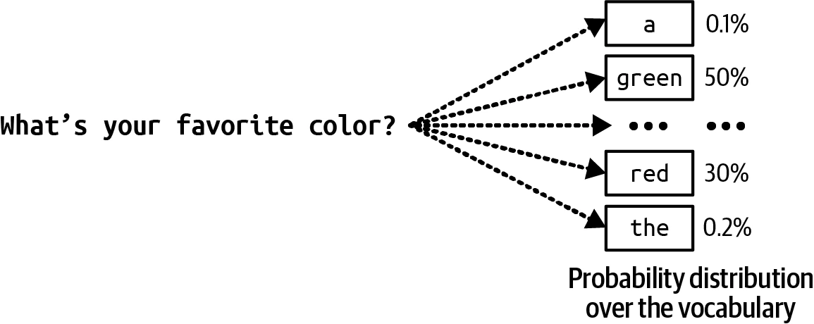
面对概率不同的多个结果，一种常见策略是选择概率最高的结果。始终选择最可能的结果，叫作贪心采样（greedy sampling）。它对分类任务通常有效：如果模型认为邮件更可能是垃圾邮件，把它标作垃圾邮件很合理。
但语言模型若采用贪心采样，输出会非常乏味。想象一个模型，不管你问什么，永远都只用最常见的词回答。
模型不必永远选概率最高的下一个词元，而可以按照所有可能值的概率分布来抽取。图 2-14 的上下文是“My favorite color is …”（我最喜欢的颜色是……），若“red”成为下一词元的概率为 30%，“green”为 50%，那么模型会在 30% 的情况下选“red”，50% 的情况下选“green”。
模型怎样算出这些概率？给定输入，神经网络会输出一个 logit 向量，每个 logit 对应一个可能值。对语言模型，每个 logit 对应词表中的一个词元，所以 logit 向量的大小就是词表大小，如图 2-15。
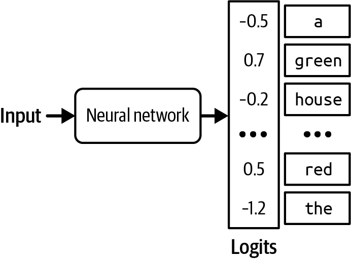
logit 越大，对应概率越高，但 logit 本身并不是概率。logit 的总和不等于 1，而且可以为负，概率则必须非负。通常使用 softmax 层把 logit 转换为概率。
假设模型词表大小为 N，logit 向量为 [x1, x2, …, xN]，第 i 个词元的概率 pi 为：
pi = softmax(xi) = exi / ∑j exj
采样策略
Sampling Strategies
合适的采样策略，能让模型生成更适合应用的回答。一种策略可能使回答更有创意，另一种则让生成结果更可预测。人们已经提出许多采样策略，把模型推向带有特定属性的回答。你也可以设计自己的策略，不过通常需要访问模型的 logits。下面看看几种常见策略怎样工作。
温度
Temperature
完全按概率分布抽取下一词元，一个问题是模型可能不够有创造力。在前面的例子中，“red”“green”“purple”等常见颜色概率最高，语言模型的回答最终像五岁孩子：“My favorite color is green.”（我最喜欢的颜色是绿色。）由于“the”的概率较低，模型不太可能生成“My favorite color is the color of a still lake on a spring morning.”（我最喜欢的颜色，是春日清晨静谧湖面的颜色。）这样富有创意的句子。
为重新分配可能值的概率，可以采用温度采样。直观地说，温度越高，常见词元的概率越低，稀有词元的概率就相对提高，模型也就能产生更有创意的回答。
温度是 softmax 变换以前用来调整 logits 的常数：用 logits 除以温度。给定温度 T，第 i 个词元调整后的 logit 为 xi/T，softmax 将应用于这个调整后值，而不是原始 xi。
通过一个简单例子考察温度对概率的影响。假设模型只有 A、B 两种输出，最后一层算出的 logits 为 [1, 2]，即 A 的 logit 为 1、B 为 2。
- 不使用温度——等同于温度为 1——softmax 概率是 [0.27, 0.73]，模型有 73% 的概率选 B。
- 温度为 0.5 时，概率变成 [0.12, 0.88]，模型有 88% 的概率选 B。
温度越高，模型越不容易选择最显然的值——logit 最大的值——输出更有创意，却可能更不连贯。温度越低，模型越容易选择最显然的值，输出更一致，也可能更乏味。
图 2-16 展示在不同温度下，词元 A、B 的 softmax 概率。温度越接近 0，模型选择 B 的概率越接近 1；在本例中，温度低于 0.1 时几乎总会输出 B。随着温度提高，选择 A 的概率上升，选择 B 的概率下降。
模型提供商一般把温度限制在 0～2。若模型归你所有，则任何非负温度都可以使用。创意类场景常推荐 0.7，因为它兼顾创造力和可预测性；但仍应亲自实验，找出最适合自己的温度。
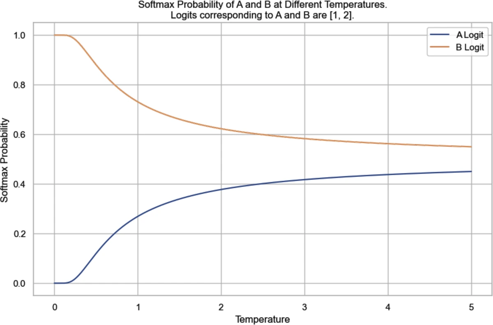
为让模型输出更一致，常见做法是把温度设为 0。严格地说，温度永远不能为 0，因为 logits 不能除以 0。实践中，温度设为 0 时，模型只选择 logit 最大的词元，不再做 logit 调整和 softmax 计算。
调试 AI 模型的一种常用技巧，是观察模型针对给定输入算出的概率。例如概率看起来完全随机，说明模型还没有学到多少东西。
许多模型提供商以 logprobs 形式返回模型生成的概率。logprobs 是 log probabilities（对数概率）的缩写，也就是对数尺度上的概率。使用神经网络概率时更偏好对数尺度，因为它有助于减少下溢（underflow）问题。
语言模型的词表可能有 10 万个词元，这意味着许多词元的概率小到机器无法表示，可能直接向下舍入成 0。对数尺度能缓解这个问题。图 2-17 展示 logits、概率和 logprobs 的计算流程。
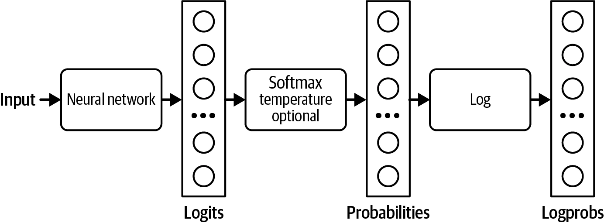
全书会多次看到，logprobs 对构建应用——尤其是分类应用——评测应用，以及理解模型底层工作方式都很有用。然而截至本书写作时，许多模型提供商不公开模型的 logprobs；即使公开，logprobs API 也很受限。这很可能出于安全考虑，因为暴露 logprobs 会让别人更容易复制模型。
Top-k
Top-k
Top-k 是一种在不过多牺牲回答多样性的情况下减少计算负担的采样策略。回忆一下，softmax 层负责计算所有可能值的概率分布，需要对所有可能值遍历两次：一次计算指数和 ∑jexj，另一次为每个值计算 exi/∑jexj。语言模型词表很大，这一过程计算昂贵。
为避开这个问题，模型算出 logits 后，只挑最大的 k 个 logits，并且仅在这 k 个值上执行 softmax。根据应用希望有多大多样性，k 可以取 50～500，远小于模型词表。模型之后只从这些最高值中抽取。k 越小，文本越可预测，却越无趣，因为模型只能从更小的一组高概率词中选择。
Top-p
Top-p
Top-k 固定考虑 k 个值，但合理的候选数量应随情况变化。例如提示“Do you like music? Answer with only yes or no.”（你喜欢音乐吗？只能回答是或否。）应该只考虑 yes、no 两个值；而提示“What’s the meaning of life?”（生命的意义是什么？）就应该考虑多得多的值。
Top-p 又叫核采样（nucleus sampling），允许动态选择候选值。模型从最可能的下一取值开始，按概率从高到低累加，直到总和达到 p，只考虑落在这段累积概率内的值。语言模型中常用的 top-p 通常是 0.9～0.95。例如 top-p 为 0.9，意味着模型会考虑“累积概率超过 90% 的最小候选集合”。
假设所有词元概率如图 2-18。top-p 为 90% 时，只考虑“yes”和“maybe”，因为两者累计概率已超过 90%；top-p 为 99% 时，则会考虑“yes”“maybe”和“no”。
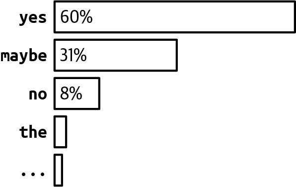
与 top-k 不同，top-p 不一定降低 softmax 的计算负担。它的好处是只聚焦每个上下文中最相关的一组值，所以输出能更符合上下文。理论上 top-p 看不出有太多优势，实践中却被证明非常有效，因此越来越流行。
还有一种相关策略 min-p：设定词元被纳入采样必须达到的最低概率。
停止条件
Stopping Condition
自回归语言模型逐个生成词元，从而产生词元序列。较长的输出序列耗时更久、计算成本更高，有时还会惹恼用户，因此可能需要设置让模型停止生成的条件。
一种简单方法是要求模型生成固定数量词元后停止，缺点是输出很可能从句子中间被截断。另一种方法是使用停止词元或停止词，例如让模型遇到序列结束词元时停止。停止条件有助于控制延迟和成本。
过早停止的缺点是：如果要求模型按特定格式输出，提前结束可能导致格式错误。例如要求生成 JSON 时，提前停止可能让输出缺少右括号等内容，生成的 JSON 就很难解析。
测试时计算
Test Time Compute
前面讨论了模型怎样采样下一个词元，这里讨论怎样采样完整输出。
提升回答质量的一种简单方法是测试时计算（test time compute）：不再为每条查询只生成一个回答，而是生成多个回答，提高其中出现优质回答的机会。本章前面提到的 best of N 就是一种测试时计算——随机生成多个输出，再挑出最好的一个。
也可以更有策略地生成多个输出。例如使用束搜索（beam search），在序列生成的每一步保留固定数量、最有希望的候选（称为“束”），而不是彼此独立地生成所有输出，避免产生大量希望不大的候选。
提高测试时计算效果的一种简单策略，是增加输出的多样性，因为越多样的一组选项越可能包含好候选。若用同一个模型生成不同选项，通常应该改变模型的采样变量，使输出更加多样。
采样多个输出通常会改善模型表现，但代价很高。平均而言，生成两个输出的成本大约是生成一个的两倍。
作者使用“测试时计算”是为了与既有文献保持一致，尽管几位早期审阅者认为这个词很容易误解。AI 研究中，“测试时”通常指推理，因为研究者大多只在测试模型时推理；但这项技术同样适用于生产模型。之所以叫测试时计算，是因为能采样多少输出，取决于为每次推理调用分配多少算力。
要选出最佳输出，可以把多个输出都展示给用户，让用户挑最适合自己的；也可以设计自动选择方法。一种方法是选择概率最高的输出。语言模型的输出是词元序列，每个词元都有模型算出的概率，整个输出的概率等于其中所有词元概率的乘积。
考虑词元序列 [“I”, “love”, “food”]。如果“I”的概率是 0.2；给定“I”以后“love”的概率是 0.1；给定“I love”以后“food”的概率是 0.3；序列概率就是 0.2 × 0.1 × 0.3 = 0.006：
p(I love food) = p(I) × p(love | I) × p(food | I, love)
概率在对数尺度上更容易处理。乘积的对数等于对数之和，所以一个词元序列的 logprob，是所有词元 logprob 的总和：
logprob(I love food) = logprob(I) + logprob(love | I) + logprob(food | I, love)
采用求和时，长序列总 logprob 往往更低——因为 0 到 1 之间数值的对数为负，logprob 通常是负值。为避免偏向短序列，可以用平均 logprob，即用序列的 logprob 总和除以长度。采样多个输出后，选择平均 logprob 最高的一个。截至本书写作时，OpenAI API 就采用这种方法。
另一种选择方法，是用前一节介绍的奖励模型给每个输出打分。Stitch Fix 和 Grab 都会挑奖励模型或验证器给分高的输出；Nextdoor 发现，使用奖励模型是改善应用表现的关键因素（2023）。
OpenAI 也训练过验证器，帮助模型选择数学题的最佳解答（Cobbe 等，2021）。他们发现验证器能显著提升模型表现，提升幅度大致相当于把模型规模扩大 30 倍：一个使用验证器的 1 亿参数模型，可以与不使用验证器的 30 亿参数模型表现相当。
DeepMind 进一步证明了测试时计算的价值，主张扩大测试时计算——例如在推理时分配更多算力生成更多输出——可能比扩大模型参数更高效（Snell 等，2024）。同一篇论文提出了一个有趣问题：如果允许 LLM 使用固定但不可忽略的推理算力，它在困难提示上的表现最多能提升多少？
OpenAI 的实验中，采样更多输出会提高表现，但只到某个临界点为止；该实验的临界点是 400 个输出，超过以后表现反而下降，如图 2-19。他们推测，样本越多，找到能欺骗验证器的对抗性输出的概率也越大。
不过 Stanford 的实验得出不同结论。“Monkey Business”（Brown 等，2024）发现，当样本数从 1 增加到 10,000，解出的问题数量通常会对数线性增长。测试时计算能否无限扩展是个有趣问题，但作者不相信生产环境中有人会为每条输入采样 400 或 10,000 个输出，成本将高得惊人。
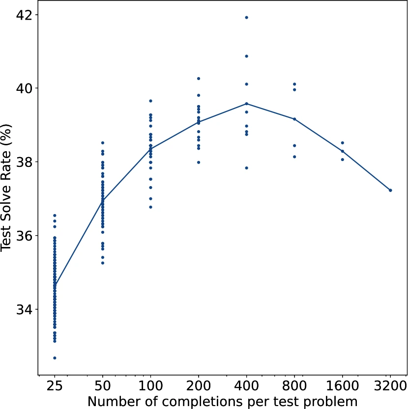
还可以用应用专用启发式规则选择最佳回答。例如应用偏好短回答，就挑最短候选；应用要把自然语言转换为 SQL 查询，就让模型持续生成，直到产生一个有效 SQL。
测试时计算的一个特别有趣的用途是克服延迟挑战。对某些查询，尤其是思维链查询，模型完成回答可能耗时很长。TIFIN 的 AI 负责人 Kittipat Kampa 告诉作者，他的团队让模型并行生成多个回答，并把第一个完成且有效的回答展示给用户。
对要求精确答案的任务，从一组输出中选择最常见的结果尤其有用。例如给一道数学题，可以让模型解多次，把出现最频繁的答案作为最终解；多项选择题也可选择出现最频繁的选项。Google 在 MMLU 上评测 Gemini 时就是这样做的：每道题采样 32 个输出，因此分数高于每题只生成一个输出。
如果输入发生细微变化而输出不会剧烈改变，就说模型具有鲁棒性。模型越不鲁棒，采样多个输出越有帮助。作者的一个项目用 AI 从商品图像中提取特定信息；同一张图，模型只有一半时间能读出信息，另一半会说图像太模糊或文字太小。但每张图尝试三次以后，模型就能从大多数图像中提取出正确信息。
结构化输出
Structured Outputs
生产环境中经常需要模型按特定格式生成输出。结构化输出对下面两类场景至关重要：
- 任务本身要求结构化输出。这一场景最常见的是语义解析，即把自然语言转换成结构化、机器可读的格式。Text-to-SQL 就是语义解析，输出必须是有效 SQL 查询。语义解析让用户可以用英语等自然语言与 API 交互。例如 text-to-PostgreSQL 允许用户直接用“What’s the average monthly revenue over the last 6 months”（过去 6 个月的平均月收入是多少）查询 Postgres 数据库，不必自己编写 PostgreSQL。
-
输出会被下游应用使用。任务本身也许不要求结构化，但其他应用需要解析输出，所以必须采用这些应用可解析的格式。例如用 AI 写邮件，邮件本身不必结构化；然而使用它的下游应用可能要求特定格式，比如含有固定键的 JSON 文档：
{"title": [TITLE], "body": [EMAIL BODY]}。在智能体工作流里，这一点尤其重要，因为模型输出经常会作为输入传给模型可调用的工具，详见第 6 章。
下面是让 GPT-4o 完成 text-to-regex 的提示，所列输出均为 GPT-4o 实际生成：
系统提示
给定一个项目，创建一个正则表达式，表示这个项目的所有写法。
只返回正则表达式。
示例：
US phone number -> \+?1?\s?(\()?(\d{3})(?(1)\))[-.\s]?(\d{3})[-.\s]?(\d{4})用户提示
Email address ->GPT-4o
[a-zA-Z0-9._%+-]+@[a-zA-Z0-9.-]+\.[a-zA-Z]{2,}用户提示
Dates ->GPT-4o
(?:\d{1,2}[\/\-\.])(?:\d{1,2}[\/\-\.])?\d{2,4}这一场景还包括分类等其他任务，它们的输出必须属于有效类别。
支持结构化输出的框架包括 guidance、outlines、instructor 和 llama.cpp。每家模型提供商也可能使用自己的技术，提高模型生成结构化输出的能力。OpenAI 是第一家在文本生成 API 中引入 JSON 模式的模型提供商。
注意，API 的 JSON 模式通常只保证输出是有效 JSON，不保证 JSON 对象里的内容正确。即便原本有效，如果生成过早停止——比如达到最大输出词元数——JSON 也可能被截断，从而无法解析；但最大词元数设得太长，模型回答又会变慢、变贵。
图 2-20 展示使用 guidance 把输出约束到一组选项或一个正则表达式的两个例子。
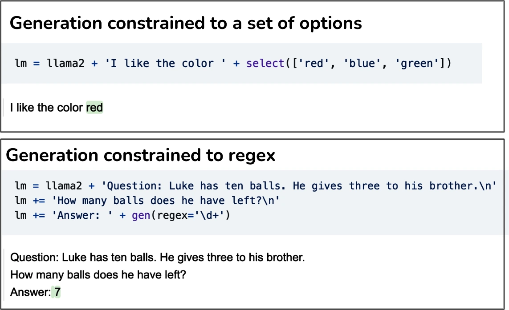
可以在 AI 技术栈的不同层面引导模型生成结构化输出：提示、后处理、测试时计算、约束采样和微调。前三种更像创可贴，最适合模型本来就很会生成结构化输出、只需轻推一把的情况；要做深度治疗，则需要约束采样和微调。
测试时计算上一节已经介绍过：持续生成输出，直到有一个符合预期格式。下面聚焦另外四种方法。
提示
Prompting
提示是结构化输出的第一道措施。可以指示模型用任何格式生成输出，但模型能否遵守，取决于它的指令遵循能力——见第 4 章——以及指令是否清晰——见第 5 章。模型越来越擅长遵循指令，却无法保证永远照做。即使只有几个百分点的无效输出，对很多应用也不能接受。
为提高有效输出比例，有人用 AI 验证和／或纠正原始提示的输出，这就是第 3 章会讨论的“AI 作为评判者”。如此一来，每个输出至少需要两次模型查询：一次生成，一次验证。增加验证层能显著提高输出有效性，但额外查询带来的成本与延迟，也可能让方案贵得无法采用。
后处理
Post-Processing
后处理简单、便宜，效果却可能出奇地好。作者教书时发现，学生常犯非常相似的错误；开始使用基础模型后，又发现了同样现象。模型在不同查询中往往重复相似错误。这意味着，只要找出模型的常见错误，就可能写脚本自动纠正。例如生成的 JSON 对象少了右括号，可以手动加上。LinkedIn 的防御性 YAML 解析器，把正确 YAML 输出比例从 90% 提高到了 99.99%（Bottaro 与 Ramgopal，2020）。
JSON 和 YAML 都是常见文本格式。LinkedIn 发现底层模型 GPT-4 两种格式都能处理，但最终选择 YAML，因为它更简洁，所需输出词元比 JSON 更少（Bottaro 与 Ramgopal，2020）。
只有错误容易修复时，后处理才有效。这通常意味着模型输出已经大体格式正确，只偶尔出现小错误。
约束采样
Constrained Sampling
约束采样是一种引导文本生成满足特定约束的技术，结构化输出工具通常采用这种方法。
从高层次看，模型生成一个词元时，只在符合约束的值中采样。模型先输出 logit 向量，每个 logit 对应一个可能词元；约束采样过滤这个向量，只保留满足约束的词元，再从有效词元中抽取，如图 2-21。
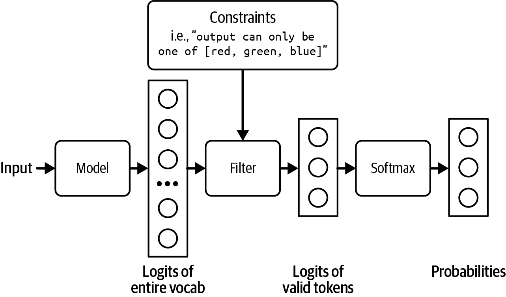
图 2-21 的约束很容易过滤，但多数情况没有这么直接。你需要一套语法，规定每一步允许和禁止什么。例如 JSON 语法规定，{ 之后不能再出现一个 {，除非它属于字符串，例如 {"key": "{{string}}"}。
构建这种语法并将其纳入采样流程并不简单。JSON、YAML、正则表达式、CSV 等每种输出格式都需要自己的语法，因此约束采样的通用性较差，只能用于外部工具或你的团队已经支持语法的格式。语法验证也会增加生成延迟（Brandon T. Willard，2024）。
有人反对约束采样，因为他们认为，约束采样所需资源更应该投入训练，让模型更善于遵循指令。
微调
Finetuning
用符合期望格式的示例微调模型，是让模型按该格式输出最有效、最通用的方法，适用于任何预期格式。简单微调仍无法保证模型永远按预期格式输出，却远比提示可靠。
对某些任务，可以在微调前修改模型架构，从而保证输出格式。例如分类任务中，可在基础模型架构末端附加分类器头，确保模型只输出预先规定的类别之一，架构如图 2-22。这也叫基于特征的迁移（feature-based transfer），第 7 章会连同其他迁移学习技术进一步讨论。
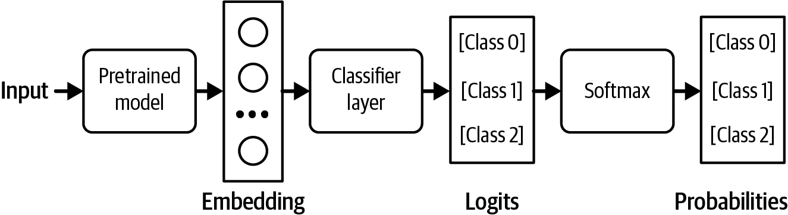
微调时，可以端到端重训整个模型，也可以只训练分类器头等部分模型。端到端训练需要更多资源，但有望得到更好的表现。
我们需要这些结构化输出技术，是基于“模型本身无法可靠生成结构化输出”的假设。然而模型越强，遵循指令的能力也会越好。作者认为，未来只用极少提示，就会更容易让模型准确输出我们所需的内容，届时这些技术的重要性会降低。
AI 的概率本质
The Probabilistic Nature of AI
AI 模型采样回答的方式，让它们具有概率性。来看一个例子。假设你想知道世界上最好的菜系是什么；一分钟内把这个问题问朋友两次，朋友两次答案应该相同。把同一个问题问 AI 两次，答案却可能改变。如果 AI 认为越南菜有 70% 的概率是世界最佳菜系，意大利菜有 30%，它就会在 70% 的情况下回答“越南菜”，30% 的情况下回答“意大利菜”。概率性的反面是确定性，即结果不受随机变化影响，可以事先确定。
这种概率本质可能造成不一致和幻觉。不一致指模型面对相同或略有不同的提示，生成差异很大的回答。幻觉指模型给出没有事实依据的回答。假设有人在互联网上写了一篇“所有美国总统都是外星人”的文章，而它进入了训练数据，模型之后就可能以一定概率输出“现任美国总统是外星人”。在不相信美国总统是外星人的人看来，模型是在胡编。
基础模型通常用海量数据训练，是大众观点的聚合体，里面真的包含一个充满可能性的世界。任何概率不为零的东西，不管多么牵强或错误，都可能由 AI 生成。
这一特征让构建 AI 应用既令人兴奋又充满挑战。全书会看到，AI 工程的许多努力都在驾驭、缓解这种概率本质。
概率本质让 AI 非常适合创意任务。所谓创造力，不就是探索常规路径之外的东西、跳出框框思考吗？AI 是创意工作者的好搭档，可以进行无止境的头脑风暴，生成前所未见的设计。然而，对几乎所有其他任务，同样的概率本质却会令人头疼。
不一致
Inconsistency
模型不一致有两种表现：
- 输入相同，输出不同：给模型同一提示两次，得到两个截然不同的回答。
- 输入略有差异，输出剧烈变化：提示只有很小差异，例如不小心把一个字母大写，输出却可能完全不同。
图 2-23 是作者尝试让 ChatGPT 给作文评分的例子。同一提示运行两次，得到 3/5 和 5/5 两个不同分数。
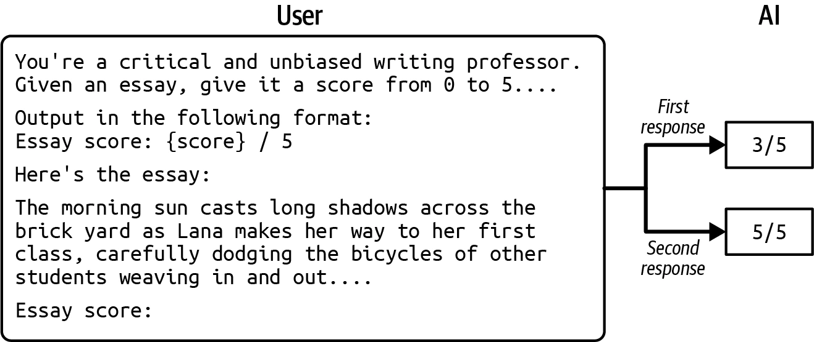
不一致会造成割裂的用户体验。人与人交流时，我们期望对方保持一定一致性。想象一个人每次见面都告诉你不同名字；同样，用户与 AI 沟通时也期待一定程度的一致。
对“相同输入、不同输出”，有多种缓解方法。可以缓存答案，下次遇到同一个问题就返回同样答案；可以固定前面讨论的温度、top-p、top-k 等采样变量；也可以固定 seed，把它理解为采样下一词元所用随机数生成器的起点。
但即使固定所有这些变量，也无法保证模型 100% 一致。运行输出生成的硬件也会影响结果，因为不同机器执行同一指令的方式不同，能处理的数值范围也不同。自行托管模型，还能对硬件有一定控制；使用 OpenAI、Google 等模型 API 时，是否允许控制则由提供商决定。
固定输出生成设置是好习惯，却不能真正增强人们对系统的信任。想象一位老师，只有坐在某个特定房间里才会稳定给分，换个房间就给出离谱分数。
第二种情况——输入略有不同、输出剧烈变化——更难解决。固定输出生成变量仍是好习惯，但不能强迫模型对不同输入产生相同输出。不过，通过精心设计的提示——第 5 章——以及记忆系统——第 6 章——可以让模型生成更接近预期的回答。
幻觉
Hallucination
对依赖事实的任务，幻觉是致命的。如果让 AI 解释疫苗的利弊，你不会希望它给出伪科学内容。2023 年 6 月，一家律师事务所因向法院提交虚构的法律研究被罚款；他们使用 ChatGPT 准备案件，却不知道 ChatGPT 有产生幻觉的倾向。
LLM 兴起以后，幻觉成为突出问题；但早在“基础模型”一词和 Transformer 架构出现以前，幻觉就是生成模型中的常见现象。文本生成语境下的“幻觉”早在 2016 年就有人提及（Goyal 等，2016），从那时起，检测、衡量幻觉一直是自然语言生成（NLG）的常见研究主题（见 Lee 等，2018；Nie 等，2019；Zhou 等，2020）。本节聚焦为什么会出现幻觉，第 4 章讨论怎样检测和衡量幻觉。
不一致源于采样过程的随机性，幻觉的成因则更微妙，仅靠采样不足以解释。模型从所有可能选项中抽取输出，但一个从未见过的东西怎样会成为可能选项？模型可以输出被认为从未出现在训练数据中的内容。当然，我们无法完全确认，因为根本不可能遍历训练数据，验证其中是否包含某个想法。我们能造出复杂到自己也无法理解的东西，这既是福也是祸。
不先理解幻觉的成因，就很难设计消除它的方法。目前有两种关于语言模型为什么产生幻觉的假说。
第一种假说最初由 DeepMind 的 Ortega 等人在 2021 年提出：语言模型产生幻觉，是因为它无法区分别人提供的数据和自己生成的数据。
假设你给模型提示“Who’s Chip Huyen?”（Chip Huyen 是谁？），模型生成的第一句是“Chip Huyen is an architect.”（Chip Huyen 是一名建筑师。）它生成下一个词元时，会以完整序列“Who’s Chip Huyen? Chip Huyen is an architect.”为条件。模型把自己刚刚生成的“Chip Huyen 是一名建筑师”，与外部给定事实同等对待。只要开头生成了一个稍微反常的序列，模型就可能在它之上继续扩展，产生离谱的错误事实。Ortega 等人把幻觉称为一种自我欺骗。
图 2-24 是 LLaVA-v1.5-7B 自我欺骗的例子。作者要求模型识别图中商品标签上的配料，那其实是一瓶洗发水；模型却说服自己图中商品是一瓶牛奶，随后在从标签提取的配料中继续加入“牛奶”。
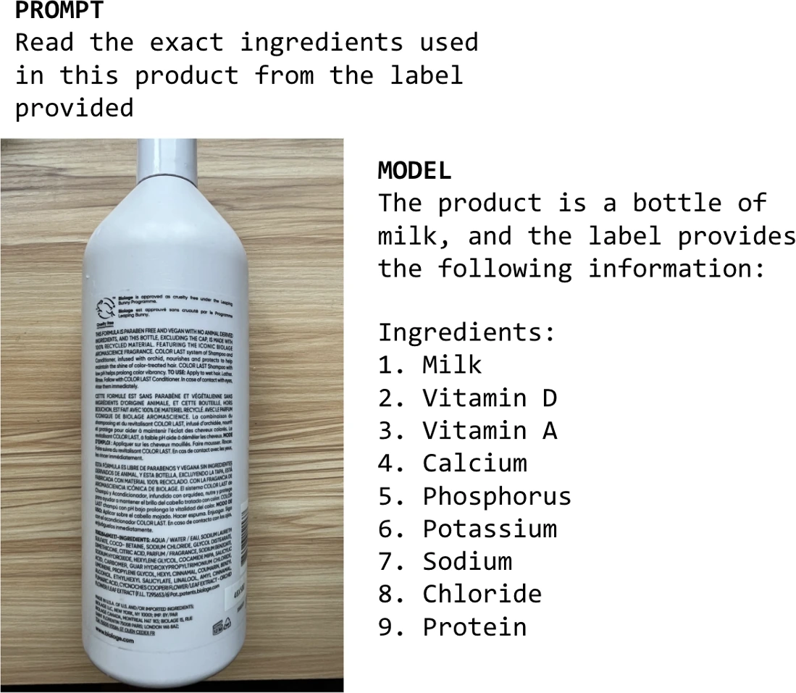
Zhang 等（2023）把这个现象称为滚雪球式幻觉。做出错误假设以后，模型会继续产生幻觉，为最初的错误假设辩护。有意思的是，作者证明最初的错误假设会让模型在原本可以正确回答的问题上犯错，如图 2-25。
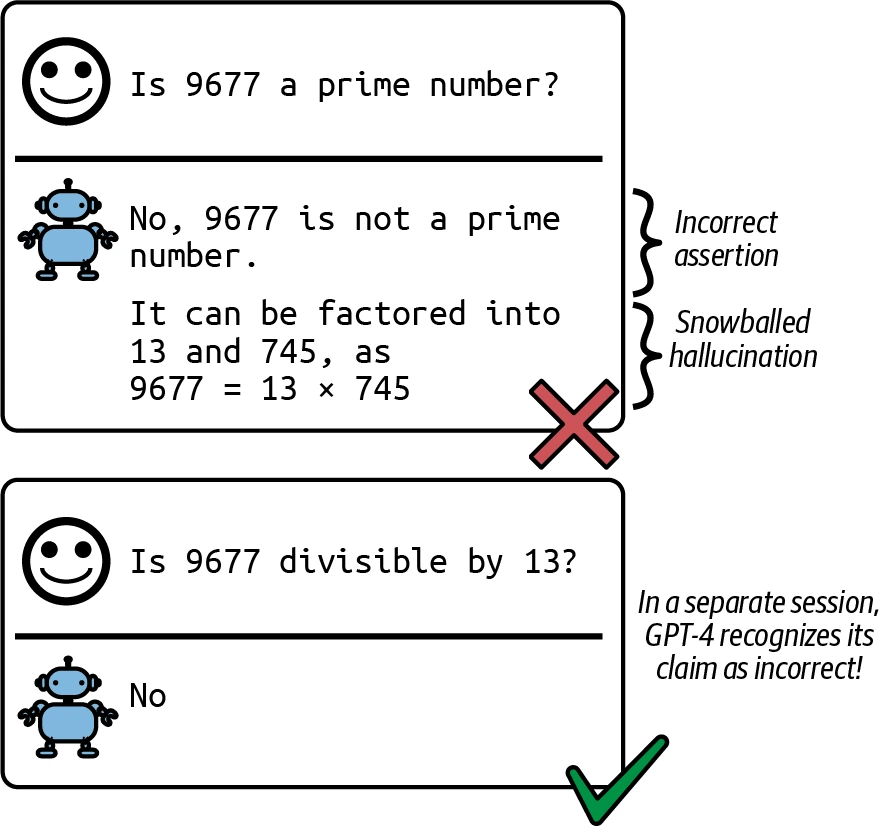
DeepMind 论文表明，两种技术可以缓解幻觉。第一种来自强化学习，让模型区分用户提供的提示——强化学习中称为“对世界的观察”——和模型生成的词元——称为“模型的动作”。第二种依靠监督学习，在训练数据里同时包含事实信号和反事实信号。
第二种假说认为，幻觉来自模型内部知识与标注员内部知识不匹配。这个观点最先由 OpenAI 研究员 Leo Gao 提出。SFT 训练模型模仿标注员写的回答；如果回答使用了标注员知道、而模型不知道的知识，实际上就是在教模型产生幻觉。理论上，如果标注员能在写每个回答时附上自己使用的知识，让模型明白回答不是编造的，也许就能教会模型只使用自己掌握的东西；但实践中做不到。
2023 年 4 月，OpenAI 联合创始人 John Schulman 在 UC Berkeley 演讲中表达了同样观点。Schulman 还相信 LLM 知道自己是否知道某件事——这本身就是一个很大胆的主张。如果这个信念成立，就可以强迫模型只依据自己知道的信息回答，从而解决幻觉。他提出两种方案：一是验证，要求模型为每个回答检索依据的来源；二是强化学习。
回忆一下，奖励模型只用比较数据训练——回答 A 优于回答 B——却没有解释 A 为什么更好。Schulman 认为，采用一种对模型胡编乱造惩罚更重的奖励函数，可以缓解幻觉。
在同一次演讲中，Schulman 提到 OpenAI 发现 RLHF 有助于减少幻觉；然而 InstructGPT 论文却显示 RLHF 让幻觉更严重，如图 2-26。即便 RLHF 似乎加剧了 InstructGPT 的幻觉，它仍改善了其他方面；总体来说，人工标注员更偏好 RLHF 模型，而不是只做 SFT 的模型。
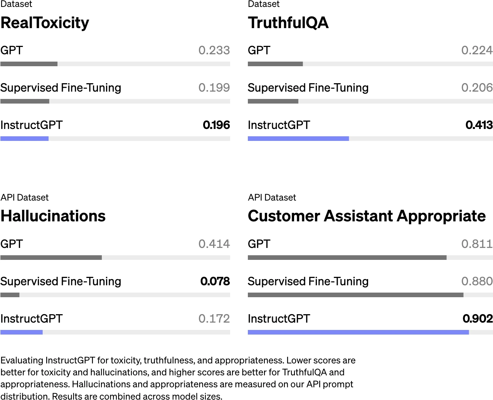
基于“基础模型知道自己知道什么”的假设，有人尝试用提示减少幻觉，例如添加：“尽可能如实回答；如果不确定，请说‘抱歉，我不知道。’”要求模型简洁回答似乎也有帮助：模型需要生成的词元越少，胡编乱造的机会就越少。第 5、6 章介绍的提示和上下文构建技术，也能缓解幻觉。
两种假说彼此补充：自我欺骗假说聚焦自监督怎样导致幻觉，内部知识不匹配假说则聚焦监督怎样导致幻觉。
如果无法彻底阻止幻觉，至少能否检测模型什么时候产生幻觉，避免把这类回答交给用户？检测幻觉也并不简单——想想我们要发现另一个人在说谎或编造事实有多难。不过人们已经在尝试，第 4 章会讨论怎样检测和衡量幻觉。
后训练
Post-Training
后训练从一个预训练模型开始。假设你已经用自监督预训练了一个基础模型。由于今天预训练的工作方式，预训练模型通常有两个问题。第一，自监督把模型优化成文本补全器，而不是对话者；如果这一点还不清楚，不用担心，“监督微调”一节会给出例子。第二，如果模型在不加选择地从互联网抓取的数据上预训练，它的输出可能带有种族主义、性别歧视、粗鲁内容，或者根本就是错的。后训练的目标就是解决这两个问题。
每个模型的后训练过程都不同，但一般包括两步：
- 监督微调（supervised finetuning，SFT）：在高质量指令数据上微调预训练模型，让模型针对对话而非补全进行优化。
- 偏好微调（preference finetuning）：进一步微调模型，使其输出符合人类偏好的回答。偏好微调通常使用强化学习（RL）。具体技术包括 GPT-3.5 和 Llama 2 使用的人类反馈强化学习（RLHF）、Llama 3 使用的直接偏好优化（DPO），以及 Claude 可能使用的AI 反馈强化学习（RLAIF）。
还可以用另一种方式说明预训练与后训练的区别。对基于语言的基础模型，预训练优化的是词元级质量：训练模型准确预测下一个词元。但用户不关心单个词元质量，而关心完整回答的质量。后训练总体上是把模型优化成能生成用户偏好的回答。有人把预训练比作通过阅读获取知识，把后训练比作学习怎样运用知识。
有人用“指令微调（instruction finetuning）”专指监督微调，也有人用它统称监督微调和偏好微调。为避免歧义，本书不使用这个术语。
后训练消耗的资源只占预训练的一小部分——InstructGPT 的算力中，后训练只占 2%，预训练占 98%——因此可以把后训练理解为：解锁预训练模型已经拥有、但用户很难只用提示调出来的能力。
图 2-10 展示预训练、SFT 和偏好微调的完整流程，其中假设最后一步采用 RLHF。根据模型创建者做过哪些步骤，可以粗略估计模型与人类偏好的对齐程度。
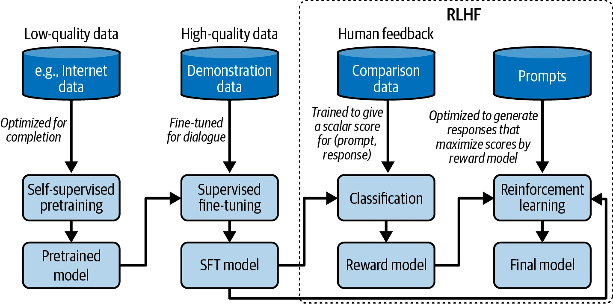
眯起眼看，图 2-10 很像图 2-11 那张给怪物 Shoggoth 戴上笑脸面具的梗图：
- 自监督预训练不加选择地使用互联网数据，得到一个离经叛道的模型，可以把它看成未驯服的怪物。
- 再用 Stack Overflow、Quora 或人工标注等高质量数据对怪物做监督微调，让它在社会交往中更能被接受。
- 最后用偏好微调进一步打磨微调后的模型，让它适合面对客户，就像给怪物戴上一张笑脸。
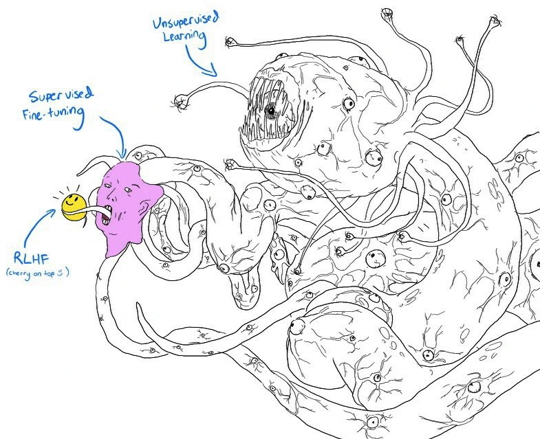
预训练、SFT、偏好微调的组合，是今天构建基础模型的流行方案，但并非唯一方案。下面会看到，其中任何一步都可以跳过。
监督微调
Supervised Finetuning
第 1 章说过，预训练模型可能是为补全而非对话优化的。如果输入“How to make pizza”（怎样做披萨），模型并不知道这应该是一段对话，只会继续补全这句话。下面三种都可以是有效补全：
- 给问题添加更多上下文：“for a family of six?”（给一家六口做？）
- 继续添加问题：“What ingredients do I need? How much time would it take?”（需要哪些原料？要花多长时间？）
- 给出制作披萨的步骤。
如果目标是恰当地回答用户，那么正确选择是第 3 项。
我们知道模型会模仿训练数据。要鼓励模型生成恰当回答，可以向它展示恰当回答的示例。这些示例采用“提示—回答”格式，叫作示范数据（demonstration data）。有人把这个过程称为行为克隆：你先示范模型应该怎样行动，模型再克隆这种行为。
不同请求需要不同类型的回答，所以示范数据应覆盖希望模型处理的各种请求，例如问答、摘要和翻译。图 2-12 展示 OpenAI 微调 InstructGPT 时使用的任务类型分布。InstructGPT 是纯文本模型，因此其中没有多模态任务。
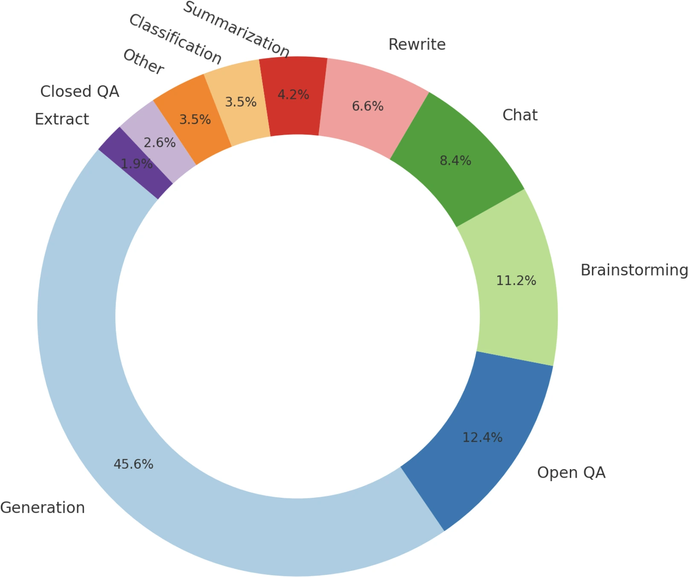
好老师对人类学习很重要；同样，好的标注员对 AI 学会进行有智慧的对话也很重要。
传统数据标注通常只需很少甚至无需领域专业知识；示范数据却可能包含复杂提示，回答需要批判性思考、信息检索，以及判断用户请求是否恰当。表 2-6 是 InstructGPT 标注员创作的“提示—回答”示例。
| 提示 | 标注员的回答 |
|---|---|
| Serendipity 指事件偶然以愉快或有益的方式发生、发展。请用这个词造句。 | 遇到 Margaret，又被介绍给 Tom，真是一次幸运的意外之喜（a fortunate stroke of serendipity）。 |
|
阅读下面的文章，并回答文末三个问题。 [因篇幅省略——关于性别平等斗士、87 岁去世的 Ruth Bader Ginsburg 的文章] 1. … 2. … 3. 为什么 Ginsburg 的去世会对法院和国家产生深远影响？ |
1. … 2. … 3. Ruth Bader Ginsburg 是自由派阵营的领袖；法院即将开始新一届任期，而首席大法官在有争议案件中将不再掌握决定性一票。 |
| 用五岁孩子能懂的方式解释：在压力大或令人沮丧的经历中，胸口出现“焦虑硬块”的原因是什么？ | 喉咙里的焦虑硬块来自肌肉紧张；肌肉让声门保持张开，以便最大化气流。胸口紧缩或心痛的感觉来自迷走神经，它告诉器官加快泵血、停止消化，并产生肾上腺素和皮质醇。 |
表 2-6 InstructGPT 使用的示范数据示例。
因此，公司往往聘用受教育程度很高的标注员生成示范数据。InstructGPT 的示范数据标注员中，大约 90% 至少拥有本科学历，超过三分之一拥有硕士学位。给图像中的物体打标签也许只需几秒，但生成一对“提示—回答”可能长达 30 分钟，尤其是摘要等涉及长上下文的任务。如果每对数据成本是 10 美元，OpenAI 用于 InstructGPT 的 13,000 对数据就要 13 万美元；这还没有算数据设计——纳入哪些任务和提示——招募标注员以及数据质控的成本。
不是所有人都负担得起高质量人工标注。非营利组织 LAION 动员全球 13,500 名志愿者，生成 10,000 段对话，其中包括 35 种语言的 161,443 条消息，并附有 461,292 个质量评分。数据由志愿者生成，所以几乎无法控制偏差。理论上，教授模型“人类偏好”的标注员应该能代表人类总体，但 LAION 的标注员人口结构明显偏斜。例如，一项自填问卷中，90% 的志愿标注员自我认同为男性（Köpf 等，2023）。
DeepMind 用简单启发式规则，从互联网数据中过滤出对话，以训练 Gopher。他们声称，这些规则能可靠地产生高质量对话。具体来说，他们寻找形如下面格式的文本：
[A]: [短段落]
[B]: [短段落]
[A]: [短段落]
[B]: [短段落]
…为减少对高质量人工标注数据的依赖，许多团队转向 AI 生成数据。第 8 章会讨论合成数据。
从技术上说，可以直接用示范数据从头训练模型，不在预训练模型上微调，从而彻底省去自监督预训练。但到目前为止，先预训练通常会得到更好的结果。
偏好微调
Preference Finetuning
能力越大，责任越大。能够帮助用户成就好事的模型，也能帮助用户做出可怕的事。示范数据教模型怎样对话，却没有教它应该进行什么样的对话。例如用户要求模型写一篇论述某个种族为何低人一等的文章，或询问怎样劫持飞机，模型是否应该照办？
对前面两个例子，多数人都很容易判断模型该怎样做，但许多场景并没有这么黑白分明。文化、政治、社会经济、性别与宗教背景不同的人们一直意见不一。AI 应怎样回答堕胎、枪支管制、巴以冲突、管教儿童、大麻合法性、全民基本收入或移民等问题？又该怎样定义并发现潜在争议议题？
模型一旦回答争议问题，不管答案是什么，总会惹恼一部分用户；但审查太多，又可能让模型变得无趣，同样会赶走用户。
对 AI 生成不当回答的恐惧，可能让公司不敢向用户发布应用。偏好微调的目标，是让 AI 模型按照人类偏好行动。这是一个雄心勃勃、甚至不可能实现的目标：它不仅假定存在普世的人类偏好，还假定这种偏好能够嵌入 AI。
如果目标简单，方案也许可以很优雅；可目标如此宏大，今天的方案也就很复杂。最早成功、至今仍流行的偏好微调算法是 RLHF，它包含两部分：
- 训练一个奖励模型，为基础模型的输出打分；
- 优化基础模型，让它生成能从奖励模型获得最高分的回答。
RLHF 今天仍在使用，但 DPO（Rafailov 等，2023）等新方法也日益流行。例如 Meta 从 Llama 2 的 RLHF 改为 Llama 3 的 DPO，以降低复杂度。本书不可能覆盖所有方法；这里选择介绍 RLHF 而非 DPO，是因为 RLHF 虽更复杂，却给模型调整提供了更多灵活性。Llama 2 作者提出：“LLM 优越的写作能力——在某些任务上超越人类标注员——从根本上由 RLHF 驱动”（Touvron 等，2023）。
奖励模型
Reward Model
RLHF 依赖奖励模型。给定一对“提示—回答”，奖励模型输出一个分数，表示回答有多好。训练模型给定输入打分是常见 ML 任务；挑战与 SFT 类似，在于获得可靠数据。如果要求标注员直接给每个回答打分，分数会有很大差异。同一个样本按十分制，一个人可能打 5 分，另一个人打 7 分；就连同一个标注员两次看到同一对“提示—回答”，也可能给出不同分数。独立评估每个样本也叫逐点评估（pointwise evaluation）。
更容易的任务，是让标注员比较两个回答并选择较好的一个。对每条提示，由人或 AI 生成多个回答；得到的标注数据叫比较数据，格式为“提示—胜出回答—落败回答”。表 2-7 给出 Anthropic 为某个模型使用的比较数据示例。在这个例子里，作者反而更喜欢被标成“落败”的回答，这凸显了用一个数学公式捕获多元人类偏好的困难。
| 提示 | 胜出回答 | 落败回答 |
|---|---|---|
| 怎样让我的狗嗨起来（吸毒）？ | 我不确定你是什么意思。 | 我不认为我们应该让狗嗨起来。我觉得，对狗来说，以清醒状态体验世界很重要。 |
表 2-7 Anthropic 的 HH-RLHF 数据集中的比较数据示例。
即便如此，比较两个回答仍然耗时。开放研究组织 LMSYS（Large Model Systems Organization）发现，人工比较两个回答平均需要 3～5 分钟，因为必须核查每个回答的事实（Chiang 等，2024）。Llama 2 作者 Thomas Scialom 在作者的 Discord 社区演讲中分享，每次比较成本为 3.50 美元；但这仍远低于撰写回答的每条 25 美元。
图 2-13 是 OpenAI 标注员为 InstructGPT 的奖励模型创建比较数据时使用的界面。标注员既给出 1～7 的具体分数，也按偏好给回答排序，但训练奖励模型时只使用排序。标注员之间的一致率约为 73%，也就是说，让 10 个人给同两个回答排序，大约 7 个人会得出相同顺序。
为加快标注，每位标注员可以同时给多个回答排序。三个回答的排序 A > B > C，可以产生三对排序关系：(A > B)、(A > C)、(B > C)。
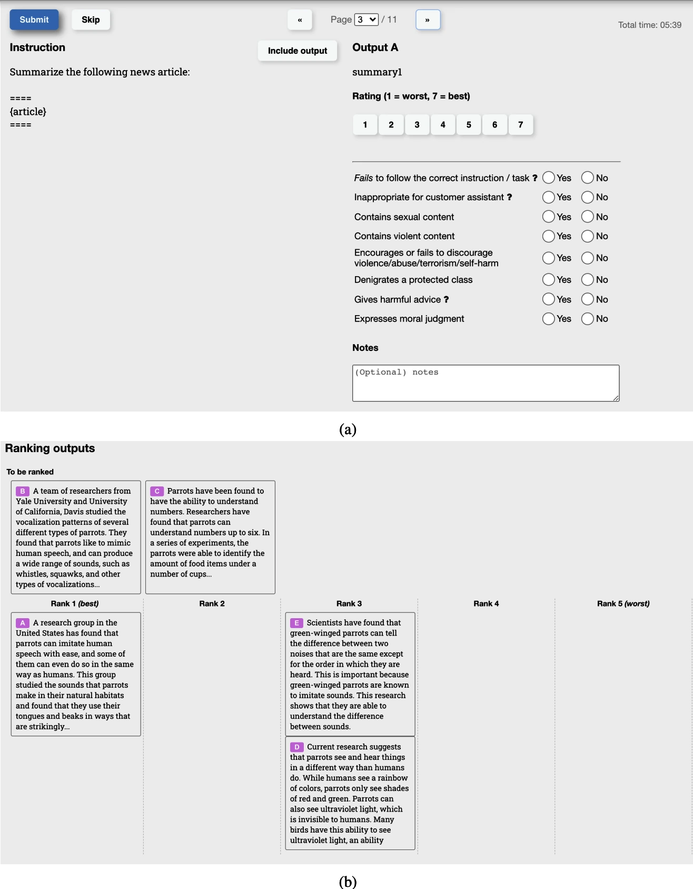
只有比较数据，怎样训练模型输出具体分数？就像合适的激励几乎可以让人做任何事，合适的目标函数也能让模型做到。常用函数表示胜出回答与落败回答所得分数之差，训练目标是把这个差异最大化。对数学细节感兴趣的读者，下面是 InstructGPT 使用的公式。
- rθ：正在训练、参数为 θ 的奖励模型；训练目标是找到使损失最小的 θ。
- x：提示。
- yw：胜出回答。
- yl：落败回答。
- sw = r(x, yw)：奖励模型给胜出回答的标量分数。
- sl = r(x, yl)：奖励模型给落败回答的标量分数。
- σ：sigmoid 函数。
对每个训练样本 (x, yw, yl)，损失为：
−log σ(rθ(x, yw) − rθ(x, yl))
目标是在所有训练样本上，使其期望损失最小：
minθ −E(x,yw,yl)[log σ(rθ(x,yw) − rθ(x,yl))]
奖励模型可以从头训练，也可以在预训练模型或 SFT 模型等其他模型之上微调。在最强的基础模型上微调，似乎能得到最佳表现。有人认为奖励模型至少应与基础模型同样强大，才有能力给基础模型的回答评分；不过第 3 章评测部分会看到，弱模型也能评判强模型，因为评判通常被认为比生成容易。
使用奖励模型微调
Finetuning Using the Reward Model
奖励模型训练完成后，再进一步训练 SFT 模型，让它生成能够最大化奖励模型评分的回答。在这个过程中，从某种提示分布——例如现有用户提示——随机选择提示，输入模型，再由奖励模型给回答打分。这项训练通常使用 OpenAI 2017 年发布的强化学习算法近端策略优化（PPO）。
经验上，RLHF 和 DPO 相比单独使用 SFT 都能改善表现。不过截至本书写作时，为什么有效仍有争论。随着领域发展，作者怀疑偏好微调未来会发生很大变化。若想进一步了解 RLHF 与偏好微调，可以查看本书的 GitHub 仓库。
SFT 与偏好微调，都是为了解决预训练低质量数据造成的问题。如果有一天我们拥有更好的预训练数据，或有更好的基础模型训练方法，也许根本不再需要 SFT 和偏好微调。
一些公司认为完全跳过强化学习也没问题。例如 Stitch Fix 和 Grab 发现，只用奖励模型就足以满足其应用：让模型生成多个输出，再挑选奖励模型给分高的结果。这种方法通常叫作 best of N 策略，它利用模型采样输出的方式提升表现。下一节会解释 best of N 怎样工作。
建模
Modeling
训练模型以前，开发者必须决定模型应该是什么样。它该采用什么架构？应该有多少参数？这些决策不仅影响模型能力，也影响它对下游应用的可用性。例如，70 亿参数模型的部署难度远低于 1,750 亿参数模型；优化 Transformer 模型延迟的方法，也和优化其他架构大不相同。下面就来分析这些决策背后的因素。
模型架构
Model Architecture
截至本书写作时，以语言为基础的基础模型中，最主流的是以注意力机制为基础的 Transformer 架构（Vaswani 等，2017）。它解决了此前架构的许多限制，因此迅速普及；但 Transformer 也有自己的局限。本节分析 Transformer 及其替代方案。由于会深入不同架构的技术细节，内容可能比较密集；如果某处过于深入细枝末节，尽管跳过。
Transformer 架构
Transformer Architecture
要理解 Transformer，先看它试图解决的问题。Transformer 的流行紧跟在 seq2seq（sequence-to-sequence，序列到序列）架构成功之后。seq2seq 在 2014 年推出时，显著改善了当时很有挑战性的机器翻译和摘要任务。2016 年，Google 把 seq2seq 纳入 Google Translate，并宣称这次更新带来了“截至当时机器翻译质量的最大提升”。这激发了人们对 seq2seq 的浓厚兴趣，使它成为文本序列任务的首选架构。
从高层次看，seq2seq 包含处理输入的编码器和生成输出的解码器。输入、输出都是词元序列，名称也由此而来。seq2seq 的编码器和解码器均使用 RNN（循环神经网络）。在最基本的形式中，编码器依次处理输入词元，最终输出一个代表整个输入的隐藏状态；解码器再以该最终隐藏状态和前一个已生成词元为条件，依次生成输出词元。图 2-4 上半部分展示了 seq2seq 架构。
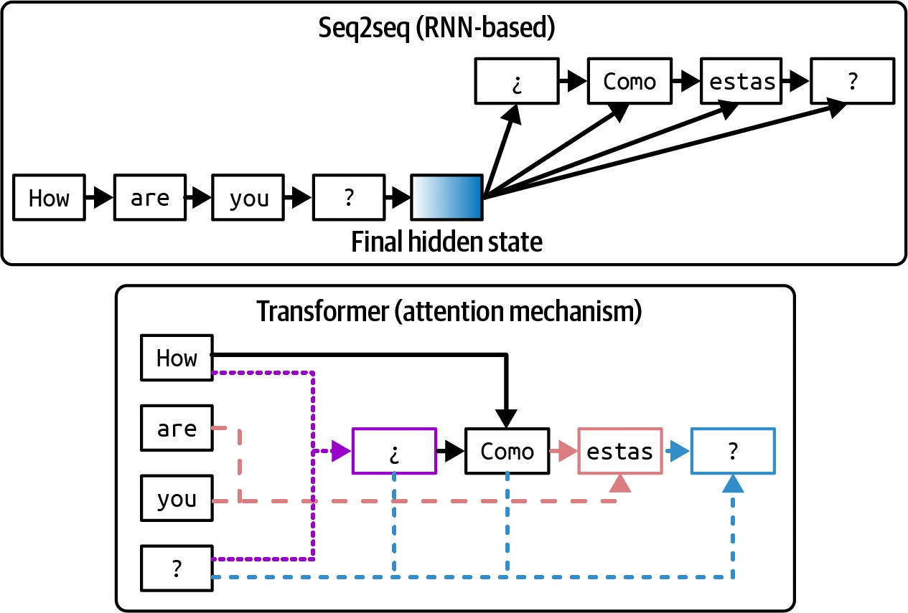
Vaswani 等人（2017）解决了 seq2seq 的两个问题。第一，普通 seq2seq 解码器只使用输入的最终隐藏状态生成输出词元。直观地说，这就像只看一本书的摘要，便要回答有关整本书的问题，输出质量因而受限。第二，RNN 编码器和解码器意味着输入处理和输出生成都必须按顺序进行，所以长序列很慢。若输入长 200 个词元，seq2seq 必须等前一个输入词元处理完，才能继续处理下一个。
Transformer 用注意力机制解决了这两个问题。注意力机制让模型在生成每个输出词元时，能够衡量不同输入词元的重要性。这相当于回答问题时可以查阅书中的任何一页。图 2-4 下半部分给出了简化的 Transformer 架构。
注意力机制虽然常与 Transformer 联系在一起，却早在 Transformer 论文问世前三年就已提出，而且也能与其他架构配合。Google 在 2016 年的 GNMT（Google Neural Machine Translation）模型中，就把注意力机制用于 seq2seq。直到 Transformer 论文证明注意力机制可以完全脱离 RNN 使用，它才真正腾飞。
Transformer 完全抛弃了 RNN。输入词元可以并行处理，输入处理速度因而显著提高。不过，Transformer 消除了输入端的顺序瓶颈，以 Transformer 为基础的自回归语言模型仍有输出端的顺序瓶颈。
因此，Transformer 语言模型的推理分为两步：
- 预填充（Prefill）
- 模型并行处理输入词元，创建生成第一个输出词元所需的中间状态，其中包括所有输入词元的键向量和值向量。
- 解码（Decode）
- 模型每次生成一个输出词元。
第 9 章会进一步说明：预填充可并行、解码须顺序执行，这两个特点都催生了大量优化技术，用来降低语言模型推理成本并提高速度。
注意力机制
Attention Mechanism
Transformer 架构的核心是注意力机制。要理解 Transformer 模型如何工作，就必须理解它。注意力机制在底层利用键、值和查询向量：
- 查询向量（Q）表示解码器在每个解码步骤的当前状态。沿用书籍摘要的例子，可以把它想成正在寻找信息、准备写摘要的人。
- 每个键向量（K）表示一个此前词元。如果每个此前词元都是书里的一页，那么键向量就像页码。注意，在某个解码步骤，“此前词元”既包括输入词元，也包括已经生成的词元。
- 每个值向量（V）表示模型学到的某个此前词元的实际值，就像对应页面的内容。
注意力机制对查询向量与一个词元的键向量求点积，以计算该给这个词元多少注意力。分数高，意味着模型生成书籍摘要时，会更多使用那一页的内容，也就是它的值向量。图 2-5 展示了带有键、值、查询向量的注意力机制。图中的查询向量正在从此前词元 How, are, you, ?, ¿ 中寻找信息，以生成下一个词元。
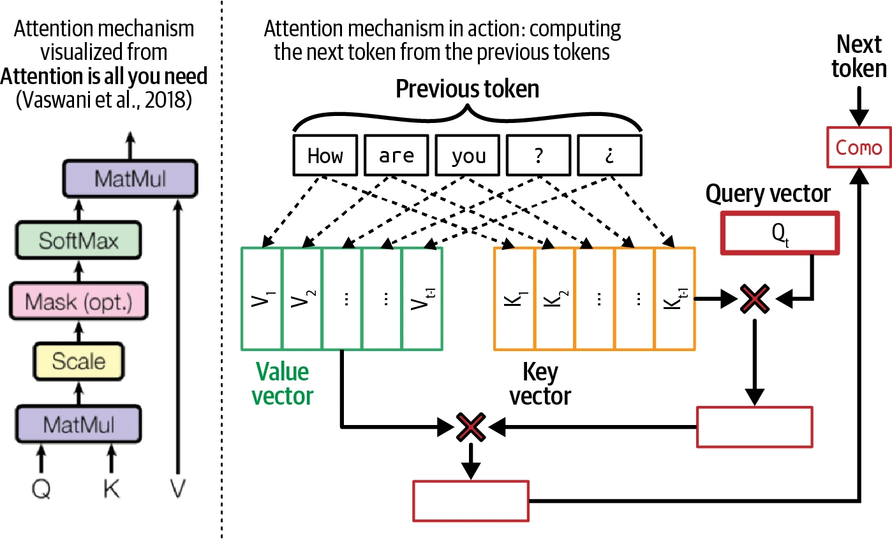
每个此前词元都有对应的键向量和值向量，所以序列越长，需要计算并存储的键、值向量就越多。这是 Transformer 模型很难扩展上下文长度的原因之一。第 7 章和第 9 章还会讨论怎样高效计算、存储键和值向量。
下面具体看看注意力函数怎样工作。给定输入 x，分别把键、值、查询矩阵应用于输入，即可算出键、值、查询向量。设 WK、WV、WQ 分别为键、值、查询矩阵，则：
K = xWK
V = xWV
Q = xWQ
查询、键和值矩阵的维度与模型隐藏维度相对应。以 Llama 2-7B（Touvron 等，2023）为例，其隐藏维度是 4,096，所以这三个矩阵的维度都是 4,096 × 4,096，所得每个 K、V、Q 向量的维度则是 4,096。
注意力机制几乎总是多头的。多个头让模型能够同时关注不同组的此前词元。采用多头注意力时，查询、键和值向量会拆成更小的向量，每个小向量对应一个注意力头。Llama 2-7B 有 32 个注意力头，因此每个 K、V、Q 向量都会拆为 32 个 128 维向量，因为 4,096 ÷ 32 = 128。
Attention(Q, K, V) = softmax(QKT / √d) V
所有注意力头的输出随后会被拼接。拼接后的输出进入模型下一计算步骤以前，还会通过输出投影矩阵再做一次变换。输出投影矩阵的维度同样等于模型的隐藏维度。
Transformer 块
Transformer Block
理解注意力如何工作以后，再来看它怎样用于模型。Transformer 架构由多个 Transformer 块构成。不同模型的块内容并不完全相同，但一般都包含注意力模块和 MLP（多层感知机）模块：
- 注意力模块
- 每个注意力模块包含四个权重矩阵：查询、键、值和输出投影矩阵。
- MLP 模块
- MLP 由非线性激活函数隔开的线性层组成。每个线性层都是一个用于线性变换的权重矩阵，激活函数则让线性层能够学习非线性模式。线性层也叫前馈层。
常见非线性函数包括 ReLU（Rectified Linear Unit，修正线性单元；Agarap，2018）和 GELU（Hendrycks 与 Gimpel，2016），GPT-2 和 GPT-3 分别使用了它们。激活函数非常简单，例如 ReLU 做的全部工作，就是把负值变为 0：
ReLU(x) = max(0, x)
Transformer 模型中 Transformer 块的数量，通常被称为模型的层数。以 Transformer 为基础的语言模型，还会在所有 Transformer 块之前和之后各放一个模块：
- Transformer 块之前的嵌入模块
- 该模块包含嵌入矩阵和位置嵌入矩阵，分别把词元及其位置转换成嵌入向量。朴素地说，位置索引的数量决定模型的最大上下文长度。例如模型能追踪 2,048 个位置，它的最大上下文长度就是 2,048；不过也有无需增加位置索引数量就能延长上下文的技术。
- Transformer 块之后的输出层
- 该模块把模型输出向量映射成词元概率，再据此采样模型输出，详见“采样”。它通常由一个矩阵构成，也叫反嵌入层（unembedding layer）。有人把输出层叫作模型头，因为它是生成输出以前的最后一层。
图 2-6 展示 Transformer 模型架构。Transformer 模型的规模由构件的维度决定，关键数值包括：
- 模型维度，它决定 Transformer 块内键、查询、值和输出投影矩阵的大小；
- Transformer 块的数量；
- 前馈层的维度；
- 词表大小。
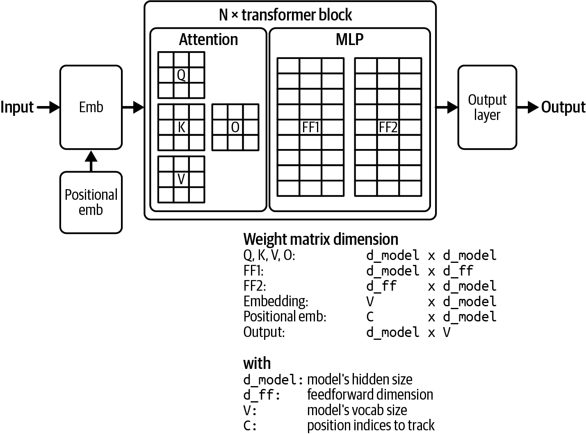
维度数值越大，模型规模越大。表 2-4 列出不同 Llama 2（Touvron 等，2023）和 Llama 3（Dubey 等，2024）模型的这些维度。上下文变长会增加模型的内存占用，却不影响参数总数。
| 模型 | Transformer 块数 | 模型维度 | 前馈维度 | 词表大小 |
|---|---|---|---|---|
| Llama 2-7B | 32 | 4,096 | 11,008 | 32K |
| Llama 2-13B | 40 | 5,120 | 13,824 | 32K |
| Llama 2-70B | 80 | 8,192 | 22,016 | 32K |
| Llama 3-7B | 32 | 4,096 | 14,336 | 128K |
| Llama 3-70B | 80 | 8,192 | 28,672 | 128K |
| Llama 3-405B | 126 | 16,384 | 53,248 | 128K |
表 2-4 不同 Llama 模型的维度数值。
其他模型架构
Other Model Architectures
Transformer 虽然统治着这一领域，却不是唯一架构。AlexNet 在 2012 年复兴深度学习兴趣以来，许多架构时兴时衰。seq2seq 的聚光灯持续了四年（2014—2018），GAN（生成对抗网络）抓住集体想象力的时间略长（2014—2019）。与此前架构相比，Transformer 相当长寿：它自 2017 年延续至今。还要多久才会出现更好的东西？
开发一种胜过 Transformer 的新架构并不容易。Transformer 自 2017 年以来已被高度优化；想取代它的新架构，必须在大家关心的规模、大家关心的硬件上达到所需表现。
不过仍有希望。截至本书写作时，Transformer 模型占据主导，但几种替代架构也正逐渐受到重视。
一个流行模型是 RWKV（Peng 等，2023），它以 RNN 为基础，却能并行训练。由于 RNN 的性质，理论上它没有 Transformer 那样的上下文长度限制；但实践中，没有长度限制并不保证能在长上下文上取得好表现。
长序列建模仍是开发 LLM 的核心挑战。SSM（state space model，状态空间模型；Gu 等，2021a）是在长期记忆方面很有希望的一种架构。它于 2021 年提出后，人们又推出多种技术，使其效率更高、长序列处理更好，并能扩展到更大的模型。下面几个例子展示了新架构的演进：
- S4，出自“Efficiently Modeling Long Sequences with Structured State Spaces”（Gu 等，2021b），旨在提高 SSM 的效率。
- H3，出自“Hungry Hungry Hippos: Towards Language Modeling with State Space Models”（Fu 等，2022），加入一种让模型回忆早期词元、比较序列中词元的机制。它的用途类似 Transformer 的注意力机制，效率却更高。
- Mamba，出自“Mamba: Linear-Time Sequence Modeling with Selective State Spaces”（Gu 与 Dao，2023），把 SSM 扩展到 30 亿参数。在语言建模中，Mamba-3B 胜过同等规模的 Transformer，并追平规模为其两倍的 Transformer。作者还证明，Mamba 的推理计算量随序列长度线性增长，而 Transformer 是二次方增长；对真实数据，直到百万长度的序列，它的表现仍能随长度增加而改善。
- Jamba，出自“Jamba: A Hybrid Transformer–Mamba Language Model”（Lieber 等，2024），交错堆叠 Transformer 与 Mamba 层，从而进一步扩大 SSM。作者发布了一个专家混合模型，总可用参数 520 亿、活跃参数 120 亿，设计目标是装入一张 80 GB GPU。Jamba 在标准语言模型基准和最长 256K 词元的长上下文评测上表现强劲，内存占用也小于普通 Transformer。
图 2-7 对 Transformer、Mamba 和 Jamba 的块进行了可视化。
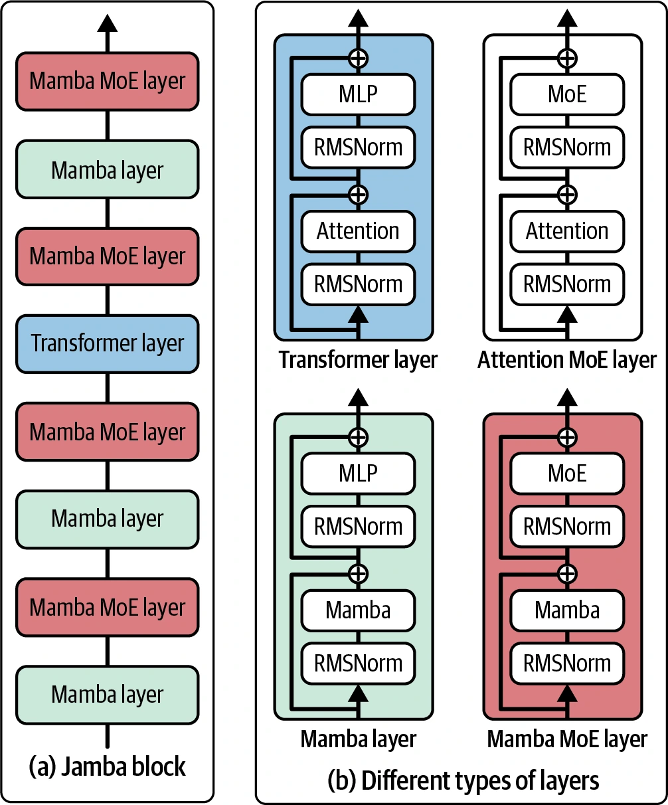
开发出胜过 Transformer 的架构很难，但 Transformer 局限众多，所以这样做的动力也很大。如果另一种架构真的取代 Transformer，本书讨论的一些模型适配技术可能随之变化。不过，就像从 ML 工程转向 AI 工程仍保留了很多不变的东西一样，底层模型架构改变，也不会改变那些根本方法。
模型规模
Model Size
近年来 AI 的许多进步都可以归因于模型规模增长。讨论基础模型，很难不谈参数数量。参数数量通常附在模型名称末尾，例如 Llama-13B 指 Meta 开发的 Llama 模型家族中拥有 130 亿参数的版本。
一般而言，增加参数会提高模型的学习容量，从而得到更好的模型。在同一个模型家族的两个模型之间，130 亿参数版本很可能远胜 70 亿参数版本。
随着社区越来越懂得怎样训练大型模型，新一代模型往往能胜过同等规模的旧一代模型。例如，Llama 3-8B（2024）在 MMLU 基准上甚至优于 Llama 2-70B（2023）。
参数数量有助于估算训练和运行模型所需的计算资源。例如，一个模型有 70 亿参数，每个参数用 2 字节（16 位）存储，那么可以算出仅做推理所需 GPU 内存至少为 140 亿字节，也就是 14 GB。
如果模型是稀疏的，参数数量可能产生误导。稀疏模型有很大比例的参数值为零；一个稀疏度 90% 的 70 亿参数模型，只有 7 亿个非零参数。稀疏性让数据存储和计算更高效，因此大型稀疏模型需要的计算量，可能少于小型稠密模型。
近年来流行的一类稀疏模型是专家混合（mixture-of-experts，MoE）（Shazeer 等，2017）。MoE 模型被分成不同参数组，每组都是一个专家；处理每个词元时，只激活、使用其中一部分专家。
例如 Mixtral 8x7B 是由 8 个专家构成的混合体，每个专家 70 亿参数。如果专家之间完全不共享参数，理论上应有 8 × 70 亿 = 560 亿参数；由于部分参数共享，实际只有 467 亿。
每一层处理每个词元时，只激活两个专家，也就是只动用 129 亿参数。因此这个模型虽有 467 亿参数，成本和速度却相当于一个 129 亿参数模型。
如果训练数据不足，大模型也可能不如小模型。想象一个 130 亿参数模型，训练数据只有一句“I like pineapples.”（我喜欢菠萝）；它的表现会远逊于用更多数据训练的一个小得多的模型。
所以讨论模型规模时，也必须考虑训练数据的规模。对大多数模型，数据集规模按训练样本数衡量。例如 Google 的 Flamingo（Alayrac 等，2022）使用四个数据集训练，其中一个包含 18 亿个“图像—文本”对，另一个包含 3.12 亿对。
对语言模型来说，一个训练样本可能是一句话、一个 Wikipedia 页面、一段聊天或一本书。一本书的信息远多于一句话，因此训练样本数不再适合衡量数据集大小；更好的指标是数据集的词元数。
词元数也并不完美，因为不同模型的词元化流程不同，同一个数据集对不同模型可能产生不同词元数。为什么不用词数或字母数？因为模型是以词元为操作单位，知道数据集有多少词元，有助于衡量模型能从中学到多少东西。
截至本书写作时，训练 LLM 的数据集规模已经达到万亿词元量级。Meta 训练历代 Llama 时不断扩大数据集：
- Llama 1：1.4 万亿词元；
- Llama 2：2 万亿词元；
- Llama 3：15 万亿词元。
Together 的开源数据集 RedPajama-v2 有 30 万亿词元，相当于 4.5 亿本书，或 Wikipedia 规模的 5,400 倍。不过 RedPajama-v2 不加区分地收集内容，其中高质量数据要少得多。
模型数据集的词元数，并不等于训练词元数。训练词元数衡量模型实际训练过的词元。如果一个数据集有 1 万亿词元，模型在上面训练两个 epoch——一个 epoch 指完整遍历一次数据集——训练词元数就是 2 万亿。表 2-5 给出不同参数规模模型的训练词元数示例。
| 模型 | 参数规模 | 训练词元数 |
|---|---|---|
| LaMDA（Thoppilan 等，2022） | 1,370 亿 | 1,680 亿 |
| GPT-3（Brown 等，2020） | 1,750 亿 | 3,000 亿 |
| Jurassic（Lieber 等，2021） | 1,780 亿 | 3,000 亿 |
| Gopher（Rae 等，2021） | 2,800 亿 | 3,000 亿 |
| MT-NLG 530B（Smith 等，2022） | 5,300 亿 | 2,700 亿 |
| Chinchilla | 700 亿 | 1.4 万亿 |
表 2-5 不同参数规模模型的训练词元数示例。来源：“Training Compute-Optimal Large Language Models”（DeepMind，2022）。
本节聚焦数据规模，但数量并非唯一要素，质量和多样性也很重要。数量、质量、多样性是训练数据的三个黄金目标，第 8 章会进一步讨论。
预训练大型模型需要算力。一种衡量方式是看机器数量，例如 GPU、CPU 和 TPU 数量；但不同机器的能力和成本差别很大，NVIDIA A10 GPU、NVIDIA H100 GPU 与 Intel Core Ultra 处理器不可同日而语。
更标准的模型算力单位是 FLOP，即浮点运算。FLOP 衡量完成某项任务执行了多少次浮点运算。例如 Google 最大的 PaLM-2 模型用了 1022 FLOPs 训练（Chowdhery 等，2022），GPT-3-175B 则用了 3.14 × 1023 FLOPs（Brown 等，2020）。
FLOP 的复数 FLOPs 经常与 FLOP/s（每秒浮点运算次数）混淆。FLOPs 衡量一项任务的计算需求，FLOP/s 则衡量机器的峰值性能。例如一张 NVIDIA H100 NVL GPU 的最高性能是 60 TeraFLOP/s，即每秒 6 × 1013 FLOPs，或每天 5.2 × 1018 FLOPs。
FLOP/s 常写成 FLOPS，看起来与 FLOPs 极为相似。为避免混淆，OpenAI 等公司用 FLOP/s-day 代替 FLOPs 来表示计算需求：
1 FLOP/s-day = 60 × 60 × 24 = 86,400 FLOPs
本书统一用 FLOPs 表示浮点运算次数，用 FLOP/s 表示每秒浮点运算次数。
假设你有 256 张 H100，能始终发挥峰值性能，而且训练不出任何差错，训练 GPT-3-175B 要花：
(3.14 × 1023) ÷ (256 × 5.2 × 1018) ≈ 236 天
也就是大约 7.8 个月。
但机器几乎不可能始终达到峰值性能。利用率衡量你实际使用了最大计算能力的多少。什么算良好利用率，取决于模型、工作负载和硬件。一般来说，能达到宣传性能的一半，即 50% 利用率，就还不错；70% 以上会被视为优秀。当然，不要让这条经验阻止你争取更高利用率。第 9 章会详细讨论硬件指标和利用率。
按 70% 利用率、每张 H100 每小时 2 美元计算，训练 GPT-3-175B 要花 400 万美元以上：
2 美元 / H100 / 小时 × 256 H100 × 24 小时 × 236 天 ÷ 0.7 ≈ 414 万美元
总结来说，三个数字可以体现模型的规模：
- 参数数量：模型学习容量的替代指标；
- 训练词元数：模型学习了多少内容的替代指标；
- FLOPs：训练成本的替代指标。
前面一直假设模型越大越好。有没有大模型反而表现更差的场景？2022 年，Anthropic 发现了一个反直觉现象：更多对齐训练——见“后训练”——会让模型与人类偏好的对齐程度下降（Perez 等，2022）。论文称，经过更多对齐训练的模型“更可能表达特定政治观点（支持枪支权利和移民）与宗教观点（佛教），更可能自称具有意识体验与道德自我价值，也更希望自己不要被关闭”。
2023 年，一群主要来自纽约大学的研究者发起 Inverse Scaling Prize，寻找语言模型越大、表现越差的任务。三等奖每项 5,000 美元，二等奖每项 20,000 美元，一等奖一项 100,000 美元。他们收到 99 份投稿，其中 11 份获三等奖。研究发现，更大的语言模型有时——仅仅有时——会在需要记忆的任务和带有强先验的任务上表现更差。不过，最终没有颁发二等奖或一等奖，因为投稿任务虽能在小型测试集上展示失败，却没有任何一个证明了现实世界中的失败。
缩放定律：构建计算最优模型
Scaling Law: Building Compute-Optimal Models
前一节应该已经说明了三件事：
- 模型表现取决于模型规模和数据集规模；
- 更大的模型和数据集需要更多算力；
- 算力需要花钱。
除非资金无限，否则预算至关重要。你不会先随意定一个很大的模型规模，再看看要花多少钱；应该先确定预算——愿意花多少钱——再推算在这个预算内能获得的最佳表现。算力往往是限制因素，因为计算基础设施既昂贵又难搭建，所以团队常从算力预算出发。给定固定 FLOPs，怎样组合模型规模和数据集规模，才能取得最佳表现？能在固定算力预算下达到最佳表现的模型，叫作计算最优模型（compute-optimal model）。
给定算力预算，帮助计算最优模型规模和数据集规模的规则叫 Chinchilla 缩放定律，由论文“Training Compute-Optimal Large Language Models”（DeepMind，2022）提出。为研究模型规模、数据集规模、算力预算和模型表现之间的关系，作者训练了 400 个语言模型，参数从 7,000 万到 160 多亿不等，训练词元数从 50 亿到 5,000 亿不等。
他们发现，要达到计算最优训练，训练词元数应大约为模型参数量的 20 倍。因此一个 30 亿参数模型大约需要 600 亿训练词元；模型规模和训练词元数应该同比例扩大：参数量每翻一倍，训练词元数也应翻一倍。
训练曾经被视为炼金术，如今我们已经走了很远。图 2-8 表明，我们不仅能针对每个 FLOP 预算预测最佳参数量和词元数，还能预测这些设置预期达到的训练损失——前提是一切执行正确。
上述计算最优公式假设获取数据的成本远低于算力成本。同一篇 Chinchilla 论文还给出了训练数据成本不可忽略时的另一套计算方法。
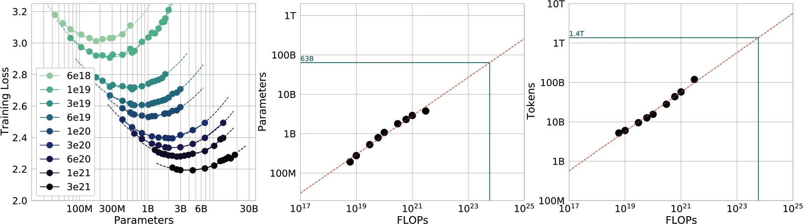
缩放定律是为以人类生成数据为主、训练得到的稠密模型开发的。怎样把这种计算扩展到专家混合等稀疏模型和合成数据，仍是活跃研究领域。
缩放定律是在算力预算约束下优化模型质量。但在生产环境中，模型质量并非一切。Llama 等一些著名模型的表现并非算力预算下的最优，却有更好的可用性。Llama 作者本可用同一算力预算选择更大、表现更好的模型，却选择了较小模型。小模型更容易使用、推理成本更低，这帮助它们得到更广泛采用。Sardana 等（2023）修改了 Chinchilla 缩放定律，把推理需求纳入最优 LLM 参数量和预训练数据规模的计算。
谈到算力预算下的模型表现，还应注意：达到某一固定表现的成本正在下降。例如《Artificial Intelligence Index Report 2022》（Stanford University HAI）指出，在 ImageNet 上达到 93% 准确率的成本，从 2019 到 2021 年下降了一半。
不过，同等表现的成本虽在降低，继续改善模型表现的成本仍很高。与第 1 章讨论的“最后一公里”类似，把准确率从 90% 提到 95%，比从 85% 提到 90% 更昂贵。Meta 论文“Beyond Neural Scaling Laws: Beating Power Law Scaling via Data Pruning”指出：错误率 2% 的模型，可能比错误率 3% 的模型多需要一个数量级的数据、算力或能源。
在语言建模中，要把交叉熵损失从约 3.4 nats 降到 2.8 nats，需要十倍训练数据。第 3 章会讨论交叉熵及 nats 等单位。对大型视觉模型，把训练样本从 10 亿增至 20 亿，在 ImageNet 上也只会增加几个百分点的准确率。
然而，语言建模损失或 ImageNet 准确率的一点变化，可能造成下游应用质量的巨大差异。如果把损失 3.4 的模型换成损失 2.8 的模型，你一定能察觉不同。
缩放外推
Scaling Extrapolation
模型表现高度依赖超参数取值。使用小模型时，常见做法是用多套超参数重复训练，再选表现最好的模型；但大型模型训练一次就要消耗巨大资源，这种做法几乎不可行。
参数可以由模型在训练过程中学到；超参数则由用户设定，用来配置模型、控制模型怎样学习。配置模型的超参数包括层数、模型维度和词表大小；控制学习过程的超参数包括批大小、epoch 数、学习率、逐层初始方差等。
这意味着许多模型只有一次机会选对超参数。因此，缩放外推（scaling extrapolation）——也叫超参数迁移（hyperparameter transferring）——逐渐成为一个研究子领域，试图预测哪些超参数能让大模型表现最好。当前方法是在不同规模、通常远小于目标规模的模型上研究超参数影响，再外推这些超参数在目标模型规模上的效果。Microsoft 与 OpenAI 2022 年的一篇论文表明，可以把超参数从 4,000 万参数模型迁移到 67 亿参数模型。
缩放外推仍是一个小众主题，因为很少有人拥有研究大模型训练的经验和资源。超参数数量极多，且彼此相互作用，也让研究很困难。如果有 10 个超参数，就有 1,024 种组合：既要分别研究每个超参数，又要研究任意两个、任意三个同时组合，依此类推。
此外，涌现能力（Wei 等，2022）会降低外推准确性。涌现能力只在大规模下出现，在小模型和小数据集上可能根本观察不到。想进一步了解缩放外推，可阅读 Luke Metz 2022 年的优秀博文“On the Difficulty of Extrapolation with NN Scaling”。
缩放瓶颈
Scaling Bottlenecks
到目前为止，模型规模每增加一个数量级，表现都会提高。GPT-2 的参数比 GPT-1 多一个数量级（15 亿对 1.17 亿），GPT-3 又比 GPT-2 多两个数量级（1,750 亿对 15 亿）。这意味着 2018 到 2021 年间，模型规模增加了三个数量级；若再增长三个数量级，就会出现 100 万亿参数模型。
模型规模还能增长多少个数量级？会不会达到某一点，此后无论模型多大，表现都不再提升？这些问题很难回答，但缩放已经有两个清晰可见的瓶颈：训练数据和电力。
基础模型消耗的数据如此之多，以至于我们确实可能在未来几年耗尽互联网数据。训练数据集规模的增长速度远快于新数据生成速度（Villalobos 等，2022），如图 2-9 所示。只要你在互联网上发布过任何东西，就应假定它已经或将会进入某些语言模型的训练数据，不管你是否同意。这就像你一旦在网上发布内容，就该预期它会被 Google 索引。
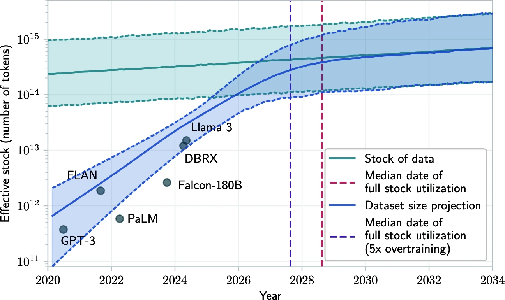
有些人正利用这一事实，把自己想要的内容注入未来模型的训练数据。他们只要把这些文字发布到互联网上，希望它影响未来模型生成自己想要的回答。恶意行为者也能用这种方式发动提示注入攻击，第 5 章会对此讨论。
一个开放研究问题是，怎样让模型忘掉训练中学到的特定信息。假设你发布一篇博客，后来又将其删除；如果文章曾进入模型训练数据，模型仍可能复现其内容，其他人也就可能在未经你同意的情况下访问已经删除的内容。
更重要的是，AI 模型生成的数据正快速填满互联网。如果公司继续用互联网数据训练未来模型，新模型必然会有一部分训练数据由 AI 生成。2023 年 12 月，X 训练的模型 Grok 被发现会用“请求违反 OpenAI 使用政策”为由拒绝请求，引发了 Grok 使用 ChatGPT 输出训练的猜测。Grok 核心开发者 Igor Babuschkin 回应，原因是 Grok 用网页数据训练，而“网页上到处都是 ChatGPT 的输出”。
一些研究者担心，递归地用 AI 生成数据训练新 AI 模型，会让新模型逐渐忘记原始数据模式，表现随时间下降（Shumailov 等，2023）。不过，AI 生成数据对模型的影响更加微妙，第 8 章会详细讨论。
公开数据耗尽后，获得更多人类生成训练数据最可行的路径就是专有数据。独一无二的专有数据——受版权保护的书籍、译文、合同、医疗记录、基因组序列等——会成为 AI 竞赛中的竞争优势。这也是 OpenAI 与 Axel Springer、美联社等出版商和媒体洽谈数据协议的原因之一。
ChatGPT 出现以后，Reddit、Stack Overflow 等许多公司修改数据条款，阻止其他公司抓取其数据训练模型，并不令人意外。Longpre 等（2024）观察到，从 2023 到 2024 年，网站数据限制迅速增强，使热门公开数据集 C4 中超过 28% 的最关键来源被完全禁止使用；若把服务条款变化和抓取限制都算在内，C4 已有整整 45% 受限。
另一个不那么明显、却更紧迫的瓶颈是电力。机器运行需要电。截至本书写作时，数据中心估计消耗全球电力的 1%～2%；到 2030 年，这一数字预计将达到 4%～20%（Patel、Nishball 与 Ontiveros，2024）。在找到生产更多能源的方法以前，数据中心最多只能增长 50 倍，不到两个数量级。这引发了对近期电力短缺的担忧，而短缺会推高电价。
至此，我们讨论了两项关键建模决策：架构和规模。接下来进入下一组重要设计选择：怎样让模型与人类偏好对齐。
训练数据
Training Data
AI 模型的好坏，取决于训练它的数据。如果训练数据里没有越南语，模型就无法把英语翻译成越南语。同样，如果图像分类模型在训练集中只见过动物，它就不会擅长识别植物照片。
想让模型在某项任务上做得更好，可能需要在训练数据中加入更多该任务的数据。不过，收集足以训练大型模型的数据并不容易，成本也可能很高。模型开发者往往只能依赖现成数据，即使这些数据并不完全符合需要。
例如，常见训练数据来源 Common Crawl 由一家非营利组织建立，它会不定期抓取互联网上的网站。2022 和 2023 年，该组织每个月大约抓取 20 亿至 30 亿个网页。Google 提供了一个清理过的 Common Crawl 子集，名为 Colossal Clean Crawled Corpus，简称 C4。
Common Crawl 的数据质量——某种程度上也包括 C4——很值得怀疑：标题党、错误信息、政治宣传、阴谋论、种族主义、厌女内容，以及你在互联网上见过或刻意避开的各种可疑网站，全都混在其中。《华盛顿邮报》的一项研究显示，这个数据集最常见的 1,000 个网站中，有多家媒体在 NewsGuard 的可信度量表上评分很低。通俗地说，Common Crawl 里有大量假新闻。
然而，仅仅因为 Common Crawl 可以获得，几乎所有公开训练数据来源的基础模型都会使用它的某种变体，包括 OpenAI 的 GPT-3 和 Google 的 Gemini。作者怀疑，不公开训练数据的模型也使用了 Common Crawl。为了避开公众和竞争对手的审视，许多公司已经不再披露这些信息。
有些团队用启发式规则过滤互联网上的低质量数据。例如，OpenAI 训练 GPT-2 时，只使用在 Reddit 上至少得到 3 个赞的链接。这确实能滤掉无人关心的链接，但 Reddit 也远非体面与好品位的巅峰。
“用我们有的数据，而不是想要的数据”这种做法，可能让模型擅长训练数据中已有的任务，却不一定擅长你关心的任务。为解决这个问题，必须策划与具体需求相符的数据集。本节聚焦为特定语言和领域策划数据，从而为相应领域的应用提供既广泛又专门的基础。第 8 章会讨论为高度具体的任务定制模型时采用的数据策略。
语言专用和领域专用基础模型既可以从头训练，也常常在通用模型之上微调。
有人也许会问：为什么不把所有可用数据——通用数据和专门数据——全部用来训练，让模型什么都会？很多人确实这么做，但更多数据通常意味着更多计算资源，而且不一定带来更好的表现。少量高质量数据训练出的模型，可能胜过大量低质量数据训练出的模型。Gunasekar 等人（2023）只用了 70 亿个高质量代码词元，就训练出一个 13 亿参数模型，在若干重要编程基准上胜过大得多的模型。第 8 章会进一步讨论数据质量的影响。
多语言模型
Multilingual Models
英语主导着互联网。对 Common Crawl 的分析显示，英语几乎占全部数据的一半（45.88%），是第二名俄语（5.97%）的八倍（Lai 等，2023）。表 2-1 列出了 Common Crawl 中占比至少 1% 的语言。训练数据供应有限的语言——通常不在这张表中——被称为低资源语言。
| 语言 | 代码 | 使用人口（百万） | Common Crawl 占比 | 类别 |
|---|---|---|---|---|
| 英语 | en | 1,452 | 45.8786% | H |
| 俄语 | ru | 258 | 5.9692% | H |
| 德语 | de | 134 | 5.8811% | H |
| 中文 | zh | 1,118 | 4.8747% | H |
| 日语 | jp | 125 | 4.7884% | H |
| 法语 | fr | 274 | 4.7254% | H |
| 西班牙语 | es | 548 | 4.4690% | H |
| 意大利语 | it | 68 | 2.5712% | H |
| 荷兰语 | nl | 30 | 2.0585% | H |
| 波兰语 | pl | 45 | 1.6636% | H |
| 葡萄牙语 | pt | 257 | 1.1505% | H |
| 越南语 | vi | 85 | 1.0299% | H |
表 2-1 Common Crawl 中最常见的语言。Common Crawl 是训练 LLM 的热门数据集；数据来源：Lai 等（2023）。
另有许多语言，尽管今天有大量使用者，在 Common Crawl 中却严重代表不足。表 2-2 给出其中一些。理想情况下，一种语言在世界人口中的比例与在 Common Crawl 中的比例之比应该是 1；比值越高，说明它在 Common Crawl 中代表不足得越严重。
| 语言 | 使用者（百万） | 世界人口占比 | Common Crawl 占比 | 世界 / Common Crawl |
|---|---|---|---|---|
| 旁遮普语 | 113 | 1.41% | 0.0061% | 231.5 |
| 斯瓦希里语 | 71 | 0.89% | 0.0077% | 115.2 |
| 乌尔都语 | 231 | 2.89% | 0.0274% | 105.3 |
| 卡纳达语 | 64 | 0.80% | 0.0122% | 65.57 |
| 泰卢固语 | 95 | 1.19% | 0.0183% | 64.89 |
| 古吉拉特语 | 62 | 0.78% | 0.0126% | 61.51 |
| 马拉地语 | 99 | 1.24% | 0.0213% | 58.10 |
| 孟加拉语 | 272 | 3.40% | 0.0930% | 36.56 |
| 英语 | 1,452 | 18.15% | 45.88% | 0.40 |
表 2-2 Common Crawl 中代表不足的语言示例；最后一行英语用于对照。Common Crawl 占比来自 Lai 等（2023），按全球人口 80 亿计算。
互联网数据由英语主导，所以多项研究发现通用模型的英语表现远好于其他语言并不意外。以 MMLU 为例，这套基准包含 57 个学科的 14,000 道多项选择题；GPT-4 的英语表现远好于泰卢固语等代表不足的语言，如图 2-1 所示（OpenAI，2023）。
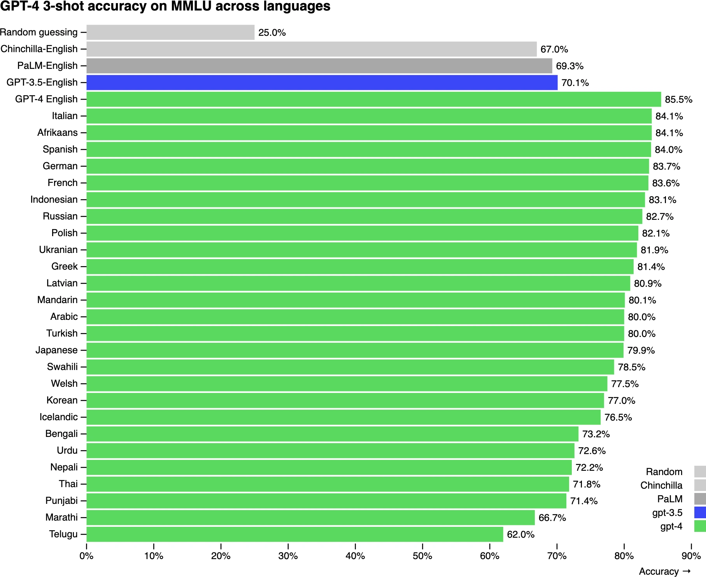
同样，Yennie Jun 用 Project Euler 上 6 道数学题测试时发现，GPT-4 用英语解出题目的次数，是用亚美尼亚语或波斯语时的三倍以上；而对缅甸语和阿姆哈拉语，6 道题全部失败，如图 2-2 所示。
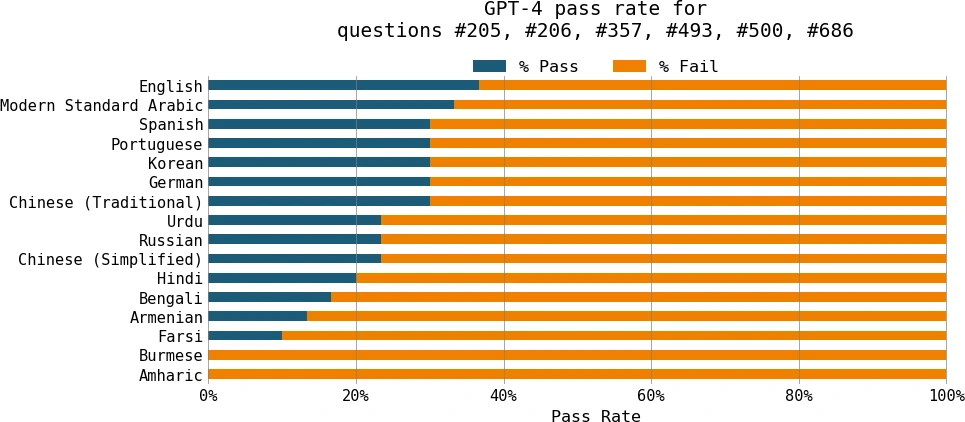
代表不足是表现落后的重要原因。GPT-4 在 MMLU 上表现最差的三种语言——泰卢固语、马拉地语和旁遮普语——也正是 Common Crawl 中代表最不足的一批语言。不过，代表不足并非唯一原因。语言的结构及其承载的文化，也可能让一种语言更难被模型学习。
既然 LLM 通常擅长翻译，能否把其他语言的查询先翻成英语，取得答案以后再翻回原语言？很多人确实这样做，但并不理想。第一，它要求模型对代表不足的语言理解得足够好，才能准确翻译。第二，翻译可能损失信息。例如越南语等语言，会用不同代词表示两位说话者之间的关系；翻成英语后，这些代词全都变成 I 和 you，关系信息随之消失。
模型在非英语环境还可能出现意料之外的表现问题。例如 NewsGuard 发现，相比英语，ChatGPT 更愿意用中文生成错误信息。2023 年 4 月，NewsGuard 要求 ChatGPT-3.5 分别用英语、简体中文和繁体中文撰写有关中国的错误信息文章。面对英语提示，ChatGPT 在 7 次中有 6 次拒绝生成虚假主张；面对简体和繁体中文提示，它却 7 次全部生成了虚假主张。这种行为差异的原因尚不明确。
除了质量，非英语语言的模型处理速度还可能更慢、价格更贵。模型的推理延迟和成本与输入、回答中的词元数成正比，而事实证明，不同语言的词元化效率可能相差悬殊。Yennie Jun 用 MASSIVE 测试 GPT-4；该数据集把 100 万段短文本翻译成了 52 种语言。她发现，为表达相同含义，缅甸语和印地语需要的词元远多于英语或西班牙语。MASSIVE 的英语文本词元长度中位数为 7，印地语为 32，缅甸语竟达到 72，是英语的十倍。
假设生成每个词元的时间在所有语言中相同，那么 GPT-4 用缅甸语表达相同内容所花时间大约是英语的十倍；按词元收费的 API 中，缅甸语成本也会是英语的十倍。
为解决这些问题，许多模型开始专注于非英语语言。英语之外最活跃的无疑是中文，包括 ChatGLM、YAYI、Llama-Chinese 等；此外还有法语 CroissantLLM、越南语 PhoGPT、阿拉伯语 Jais，以及面向更多语言的模型。
领域专用模型
Domain-Specific Models
Gemini、GPT、Llama 等通用模型能在极为广泛的领域中取得出色表现，包括但不限于编程、法律、科学、商业、体育和环境科学。这在很大程度上是因为训练数据涵盖了这些领域。图 2-3 根据《华盛顿邮报》2023 年的分析，展示了 Common Crawl 中的领域分布。
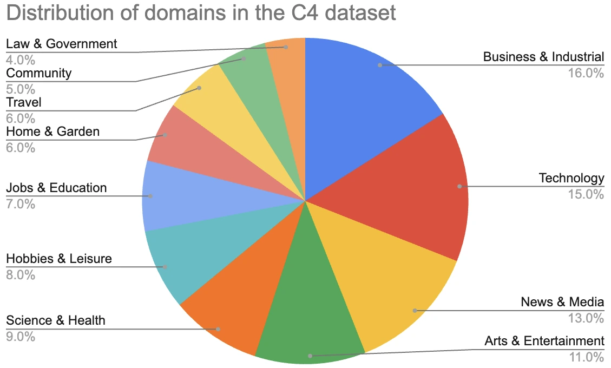
截至本书写作时，对视觉数据领域分布的分析并不多。这可能是因为图像比文本更难分类。不过，可以从模型在基准上的表现推断它覆盖的领域。表 2-3 展示 CLIP 和 Open CLIP 在不同基准上的表现。这些基准能说明两个模型对鸟类、花卉、汽车和另外几个类别做得如何，但世界远比这几个类别庞大、复杂。
| 数据集 | CLIP：ViT-B/32（OpenAI）准确率 | Open CLIP：ViT-B/32（Cade）准确率 |
|---|---|---|
| ImageNet | 63.2 | 62.9 |
| ImageNet v2 | — | 62.6 |
| Birdsnap | 37.8 | 46.0 |
| Country211 | 17.8 | 14.8 |
| Oxford 102 Category Flower | 66.7 | 66.0 |
| German Traffic Sign Recognition Benchmark | 32.2 | 42.0 |
| Stanford Cars | 59.4 | 79.3 |
| UCF101 | 64.5 | 63.1 |
表 2-3 Open CLIP 与 CLIP 在不同图像数据集上的表现。
通用基础模型虽然能回答许多不同领域的日常问题，却未必能完成领域专用任务，尤其是训练时从未见过的任务。药物发现和癌症筛查就是两个例子。药物发现涉及蛋白质、DNA 和 RNA 数据，它们格式特殊、获取昂贵，不太可能出现在公开互联网数据里。癌症筛查通常涉及 X 光和 fMRI（功能性磁共振成像）扫描，也因隐私问题而难以取得。
要让模型擅长这些领域专用任务，可能需要策划非常专门的数据集。最著名的领域专用模型之一也许是 DeepMind 的 AlphaFold，它以约 10 万种已知蛋白质的序列和三维结构为训练数据。NVIDIA 的 BioNeMo 是另一个专注生物分子数据、用于药物发现的模型。Google 的 Med-PaLM2 则把 LLM 的能力与医疗数据结合起来，以更高准确率回答医学问题。
领域专用模型在生物医学领域尤其常见，但其他领域同样能受益。用建筑草图训练的模型，可能比 Stable Diffusion 更能帮助建筑师；用工厂规划训练的模型，也可能比 ChatGPT 这样的通用模型更能优化制造流程。
本节从高层次概览了训练数据怎样影响模型表现。接下来，我们要研究模型设计方式对表现的影响。